ecbyts Documentation
Environmental Digital Twin Platform — complete user guide for creating 3D models of environmental monitoring sites with linked temporal data, scientific analytics, ML-powered recognition, and blockchain-backed integrity.
v0.3.0Overview
ecbyts (Environmental & Occupational Core Byte Tools) is a platform for Environmental Digital Twins. It creates 3D models of environmental monitoring sites — contaminated areas, water bodies, remediation projects — with linked temporal observation data, scientific analytics, ML-powered recognition, and blockchain-backed data integrity.
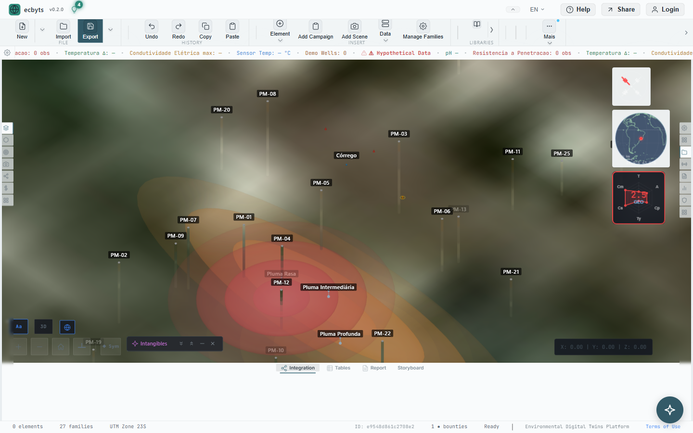
3D Digital Twins
Build and visualize 3D models of environmental sites with interactive camera controls.
Scientific Analytics
Mann-Kendall trends, predictions, cost analysis, and prescriptive optimization.
Blockchain Integrity
SHA-256, ECDSA signatures, Merkle trees, and hash chains for tamper-proof data.
AI-Powered
Multi-provider LLM assistant, ML image recognition, and neural network modules.
Compliance
CONAMA/CETESB validation, domain validators, ESH matrices, and regulatory support.
IoT Integration
Connect real-time sensors for continuous environmental monitoring.
Quick Start
- Open the application at
https://ecbyts.comorlocalhost:4000for local development. - On first visit, the Welcome Screen lets you choose an init mode: Random Model, Map Picker, Last Location, or Blank.
- Use the toolbar at the top to access grouped actions: File, History, Insert, Libraries, View, Analyze, and More.
- Click Insert > Add Element to create your first environmental element (well, plume, lake, etc.).
- Add Campaigns to define sampling events, then add Observations (parameter + value + timestamp) to your elements.
- Use the 3D viewport to visualize your site. Rotate (left-click drag), pan (right-click drag), zoom (scroll).
- Go to Optimize tab for analytics, neural networks, and guided environmental workflows.
- Export your model using File > Export to save as an ECBT key.
Demo Mode
Click File > Random to instantly create a sample site with elements, campaigns, observations, ticker data, and analytics. Great for exploring features.
Interface Guide
Layout
The application uses a CSS Grid layout with five main areas:
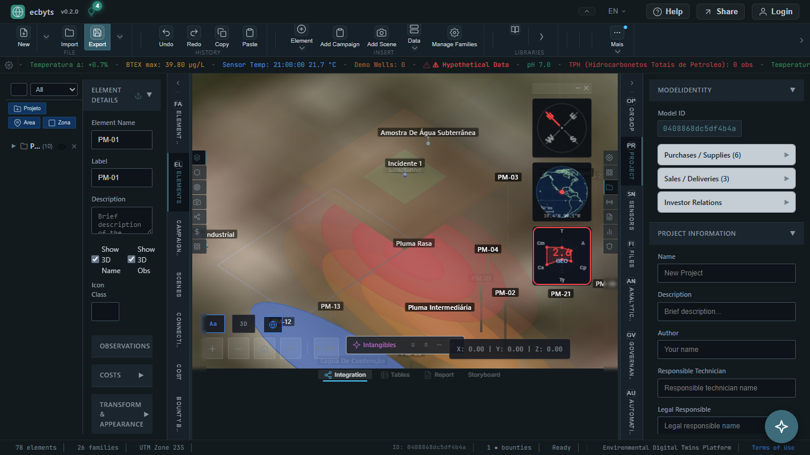
- Toolbar (top) — Flat toolbar with permanent groups and progressive-disclosure dropdowns.
- Left Panel — Element list organized by family. Click an element to select it in the 3D view.
- 3D Viewport (center) — Interactive Three.js scene showing your environmental model.
- Right Panel — Property inspector showing details of the selected element, observations, and campaigns.
- Constellation HUD (bottom) — Tabbed bottom bar with analytics charts, data entry matrix, cost analysis, timeline ticker, and more.
Panel Reference
These screenshots summarize the main panels and navigation surfaces used by most modules and submodules:
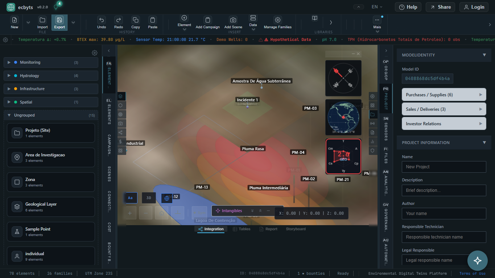
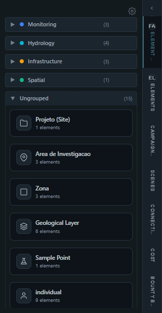
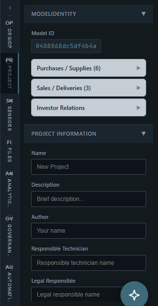
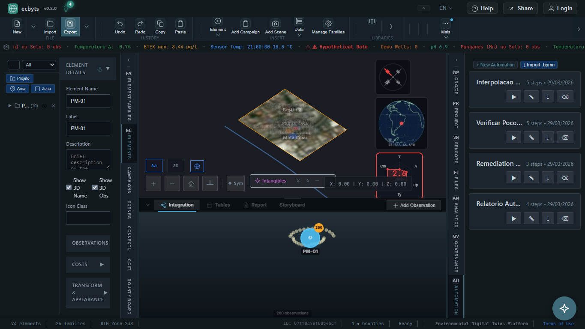
Dockable Panels
All panels support three states: docked (fixed to edge), minimized (collapsed to edge tab), and floating (draggable, resizable). Right-click a panel title bar for options.
Toolbar Groups
The toolbar uses a flat layout with permanent groups and dropdown menus for progressive disclosure:
| Group | Purpose | Key Actions |
|---|---|---|
| File | Project lifecycle and exchange | New, Random, Clear Model, Open/Import, Export, Download Key, Share URL, Drawing Plate, Diff & Merge |
| History | Edit history and duplication | Undo, Redo, Copy, Paste |
| Insert | Add model content and source data | Element, Campaign, Scene, Data Entry Matrix, EDD Import, DXF/CAD, Georeference, Field Variables, Sensors Center, Families |
| Libraries | Reusable content and packaged knowledge | Installed Libraries Gallery, Marketplace, Library Manager, Import Library, Product Wizard |
| View | Camera, layout, and display controls | 3D, Top, Front, Fit All, 2D/3D Toggle, Reset, Panels, Theme, Labels, Inspector, Symbology, Performance, Customize |
| Analyze | Analytics, modeling, automation, and AI | Temporal, Interpolation, Analytics/Governance/Cost/Issues panels, Hypothesis Test, MAC Curve, Geology, Voxels, EIS, SAO, Regulatory Standards, Aerial Recognition, ML, Workflows, Pipelines, AI Assistant |
| More | Auxiliary workspace utilities | Focus Mode, Snapshot, Account Usage, About, Documentation |
Two additional toolbar surfaces appear contextually: Voxel Controls are shown only when voxel mode is active, and the Edit Ribbon replaces the main toolbar while shape editing is in progress.
View Modes
The application has a View Router that manages four distinct modes, switchable via the toolbar or keyboard:
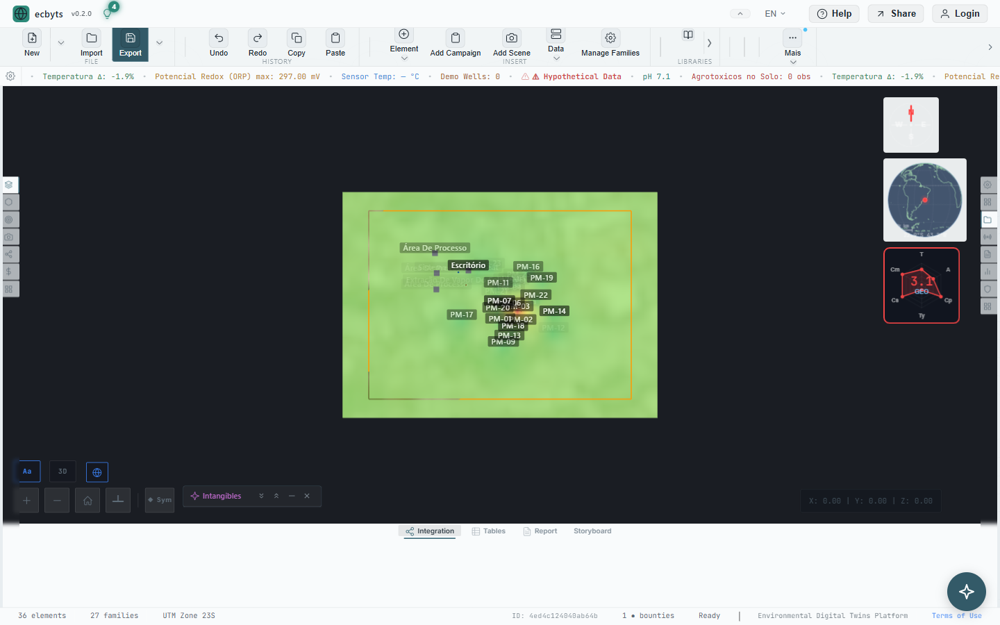
| Mode | Description |
|---|---|
| Home | Dashboard grid with project cards, recent activity, and quick actions. No 3D scene loaded. |
| Actions | Focused on data entry and tabular workflows — elements list, campaigns, observations. |
| 2D | Top-down orthographic view. Ideal for site plans, interpolation surfaces, and spatial analysis. |
| 3D | Full perspective 3D scene with orbit controls, labels, terrain, and voxel layers. |
Lazy 3D Initialization
The Three.js scene only initializes when you first switch to 2D or 3D mode. This keeps the Home and Actions views fast and lightweight.
Element Families (PDPL-U / PDPLU)
Elements are the building blocks of your environmental model. Each element belongs to a family that determines its 3D representation, available properties, and behavior. The classification follows the PDPL-U / PDPLU model.
In ecbyts, PDPL-U and PDPLU refer to the same organizing model: Ponto, Data, Parametro, Leitura, Unidade. This structure underpins the platform's element families, tabular observation views, CSV exports, and the broader organization of environmental records and site entities.
When you see PDPLU in the bottom Constellation HUD, it is the same concept rendered as a flat observation table and export format.
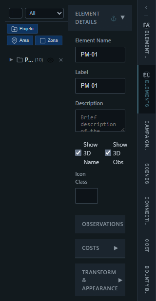
| Family | ID | Description |
|---|---|---|
| Environmental Monitoring | ||
| Contamination Plume | plume | 3D volume representing contaminated groundwater or soil. Can be visualized with interpolation surfaces. |
| Monitoring Well | well | Vertical borehole used for sampling groundwater. Supports constructive and lithologic SVG profiles. |
| Lake | lake | Surface water body. Can hold water quality observations over time. |
| River | river | Flowing water body modeled as a linear feature with cross-sections. |
| Spring | spring | Natural groundwater discharge point. Important for hydrogeological models. |
| Sample Point | sample | Soil, surface water, or other sampling location. |
| Geological Layer | stratum | Subsurface stratum representing different soil/rock types. |
| Marker | marker | Generic reference point for any location of interest. |
| Sensor | sensor | Remote IoT monitoring device. Collects real-time environmental data via external protocols. |
| Infrastructure | ||
| Building | building | Infrastructure element. Used as spatial reference for site layout. |
| Storage Tank | tank | Chemical or fuel storage container. Potential contamination source. |
| Boundary | boundary | Property or study area limits. Defines the extent of the model. |
| Spatial Blueprint | blueprint | Imported CAD/GIS footprint from DXF files. Provides base mapping. |
| ESG & H&S | ||
| Organizational Area | area | Plant sector or zone. Used for H&S metrics and resource allocation. |
| Individual | individual | Person, animal, or tree. For H&S (workers) and biodiversity (fauna/flora). |
| Incident | incident | H&S occurrence: accidents, near-misses, first aid. |
| Emission Source | emission_source | Chimney, vent, or fugitive emission point. For atmospheric emission inventories. |
| Waste Stream | waste_stream | Solid waste flow. For waste management and recycling tracking. |
| Effluent Point | effluent_point | Liquid effluent discharge point. For effluent quality monitoring. |
| Habitat | habitat | Biodiversity area: ecosystems, protected areas, restoration zones. |
| Special | ||
| Intangible Asset | intangible | Contracts, carbon credits, green energy certificates, environmental licenses. |
| Generic Element | generic | Wildcard type for elements that do not fit any other family. |
| Geological Fault | fault | Geological fault trace or zone. Used in structural geology and seismic hazard models. |
| Mining & Civil | ||
| Dam | dam | Water or tailings containment structure. Used in mining, hydro, and sanitation projects. |
| Open-pit Mine | pit | Surface benched excavation. Used in mining, quarries, and post-closure remediation. |
| Fleet & Operations | ||
| Vehicle | vehicle | Mobile fleet element (trucks, machinery, drones). Used for logistics and emission tracking. |
| Equipment | equipment | Operational equipment (pumps, generators, instruments). Used for CAPEX/OPEX and maintenance. |
| Linear Infrastructure | infra_linear | Linear built elements: pipes, cables, fences, conveyor belts. |
| Treatment System | treatment_system | Remediation and treatment systems: pump & treat, SVE, bioreactors, oil-water separators, septic systems. |
| Atmosphere | atmosphere | Atmospheric zone or air mass. Used for air quality and GHG dispersion modeling. |
| Transport & Flow | ||
| Route & Flow | route_flow | Linear directional elements: sampling routes, vehicle routes, pipes, connectors. Supports Manning hydraulics and graph connectivity. |
| Containers (Hierarchy) | ||
| Project | site_project | Top-level project container grouping all areas and zones of a site. |
| Area | site_area | Defined area within a project (e.g., contamination source zone, investigation perimeter). |
| Zone | site_zone | Sub-division of an area for granular spatial organization. |
Adding Elements
Go to Insert > Add Element, select a family, and the element will appear in the 3D viewport. Drag to position it. Use the Property Inspector (right panel) to edit coordinates, name, and properties.
Campaigns
A Campaign represents a field sampling event — a specific date when a team collected data from multiple elements. Campaigns organize observations chronologically.
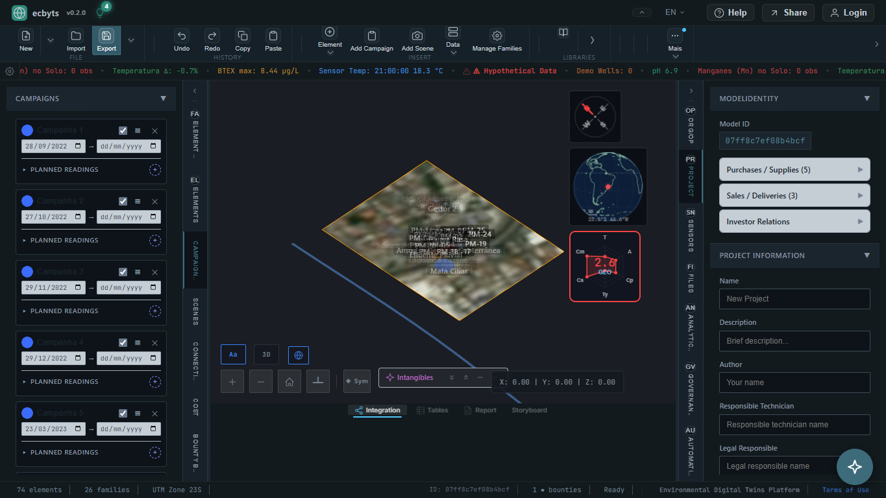
- Each campaign has a date, team name, and description.
- Observations are always linked to both an element and a campaign.
- Use the Timeline Ticker in the Constellation HUD to navigate between campaigns and see how data changes over time.
- Create campaigns via Insert > Add Campaign or through the right panel.
Observations
An Observation is a single measurement at a specific point in time: a parameter (what was measured), a value (the result), and a timestamp (when). Observations are the core data of the environmental model.
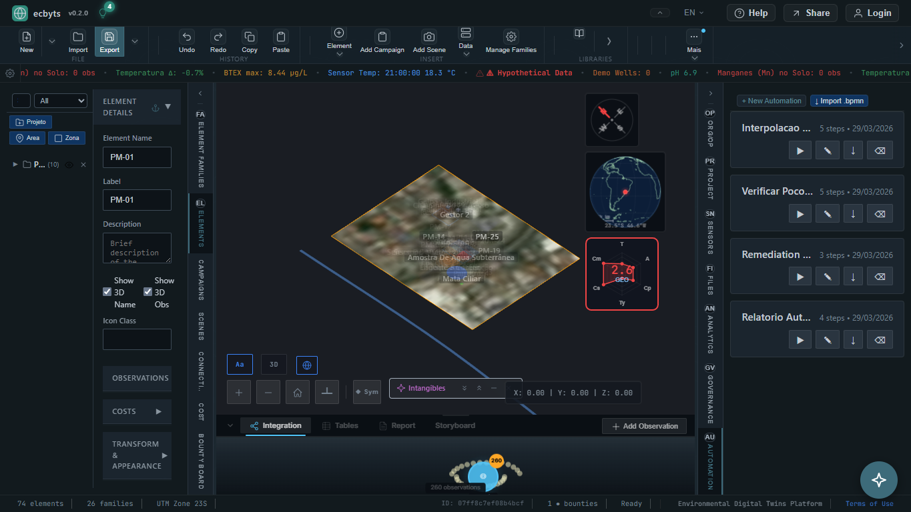
- Parameter: What was measured (e.g., Benzene, pH, Dissolved Oxygen). Supports 30+ built-in parameters plus custom ones.
- Value: The numeric result with units (e.g., 0.005 mg/L). Unit conversion uses a 90+ unit catalog.
- Timestamp: When the measurement was taken (linked to a Campaign).
- Custom Fields: Additional context like sample depth, detection limit, fraction, and preservation method.
- Observations drive analytics: trends, exceedances, interpolation, compliance checks, and EIS scoring.
Scenes
Scenes are saved camera viewpoints and display configurations. They let you quickly switch between different views of your model.
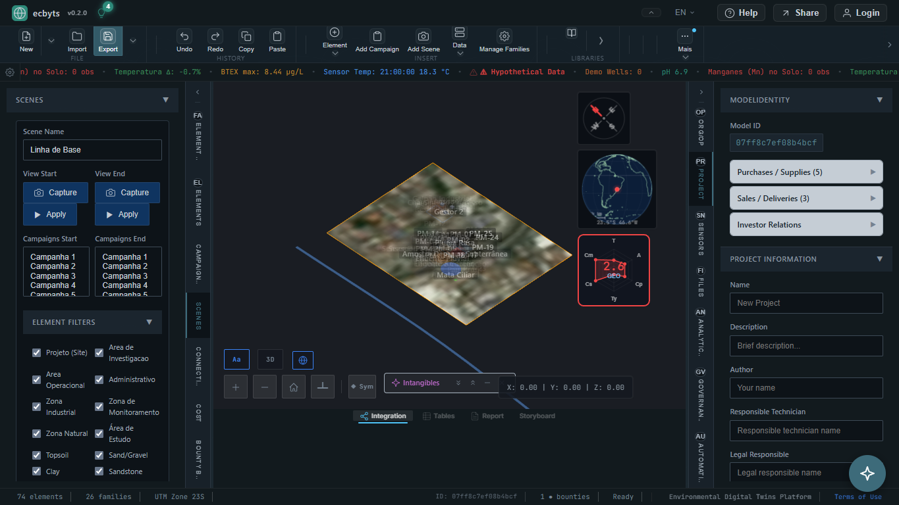
- Save the current camera position, zoom, and rotation as a named scene.
- Scene snapshots are included in reports and the storyboard sequencer.
- Create scenes via Insert > Add Scene.
Stamps & Edges
Stamps are compliance or status tags attached to elements. Edges are directed relationships between elements, forming a knowledge graph of your environmental site.
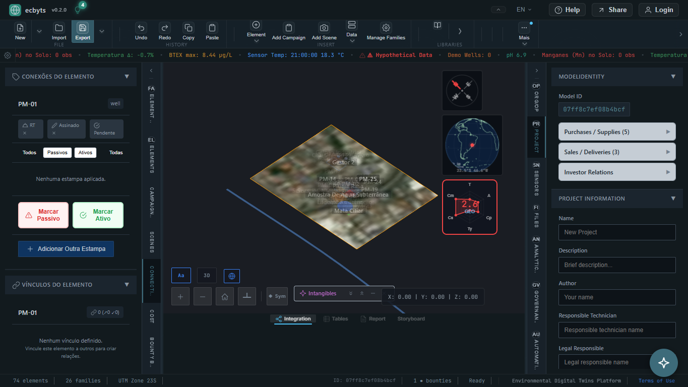
Stamps
20+ predefined tags for element annotation:
compliance_ok,compliance_fail— Regulatory compliance status.priority_high,priority_medium,priority_low— Prioritization levels.retest_required,archived,under_review— Workflow status markers.- Stamps are visible in the element list and included in ECBT exports.
Edges
15+ directed relationship types between elements:
monitors— Well monitors a plume or area.sources_from,discharges_to,flows_to— Hydrological connections.contains,part_of— Spatial containment hierarchy.occurred_in,involved_in— Incident-area associations.inhabits,supplies,treats,adjacent_to— Ecological and operational links.
Adding Stamps & Edges
Select an element, then use the Stamps tab in the right panel to toggle tags. For edges, use the Edge Editor to create directed relationships between two selected elements.
Unit Conversion Engine
90+ units across 12 dimensions with automatic conversion between compatible units. When observations use different units for the same parameter, the engine converts values transparently for analytics and compliance checks.
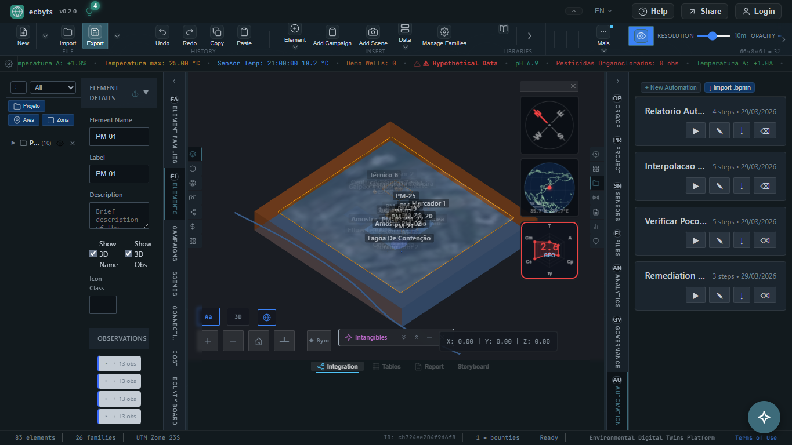
| Dimension | Units |
|---|---|
| Concentration | mg/L, μg/L, ppm, ppb, mg/kg, μg/kg, meq/L, mol/L |
| Length | m, cm, mm, km, ft, in, yd, mi |
| Temperature | Celsius, Fahrenheit, Kelvin |
| Flow | m³/s, L/s, m³/h, L/min, gal/min |
| Mass | kg, g, mg, μg, ton, lb |
| Area | m², ha, km², acre |
| Volume | m³, L, mL, gal |
| Emissions | tCO2e, kgCO2e (GWP: CH4=28, N2O=265, SF6=23500) |
| Safety rates | per 200k hh (OSHA), per 1M hh (OIT) |
| Biodiversity | species count |
| Noise | dB(A) |
| Dimensionless | pH, ratio, percentage |
Auto-Conversion
When autoConvert is enabled on an observation, the system converts values to the parameter's default unit automatically. Custom parameters can define their own unit dimensions.
3D Scene
The 3D viewport is powered by Three.js and renders your environmental model in real-time.
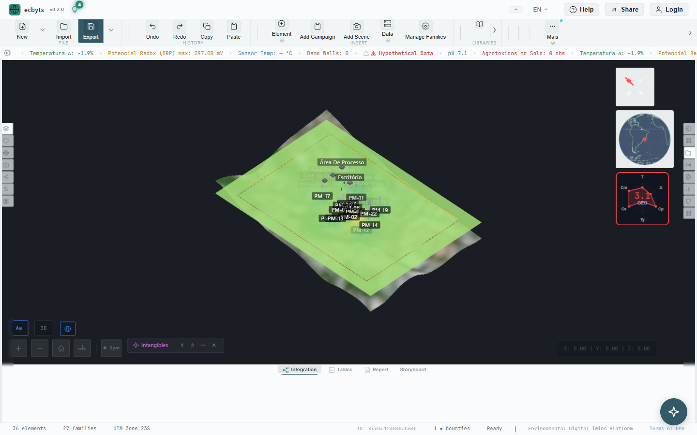
Camera Controls
| Action | Mouse | Touch |
|---|---|---|
| Rotate / Orbit | Left-click + drag | One finger drag |
| Pan | Right-click + drag | Two finger drag |
| Zoom | Scroll wheel | Pinch |
| Select element | Left-click on element | Tap on element |
| Reset camera | Double-click background | Double-tap background |
Visualization Options
- Grid — Toggle reference grid on/off (View tab).
- Layer Visibility — Show/hide specific element families.
- Labels — Four categories of CSS2D billboards: element names, observation values, geology layers, and model title.
- Terrain — Enable interpolated terrain surface from elevation data.
- Symbology — Apply visual overlay profiles for standardized site mapping.
- Cursor Projector — Real-time coordinate display projected onto terrain and meshes.
3D Labels
In-scene element labeling using CSS2DRenderer billboards that always face the camera.
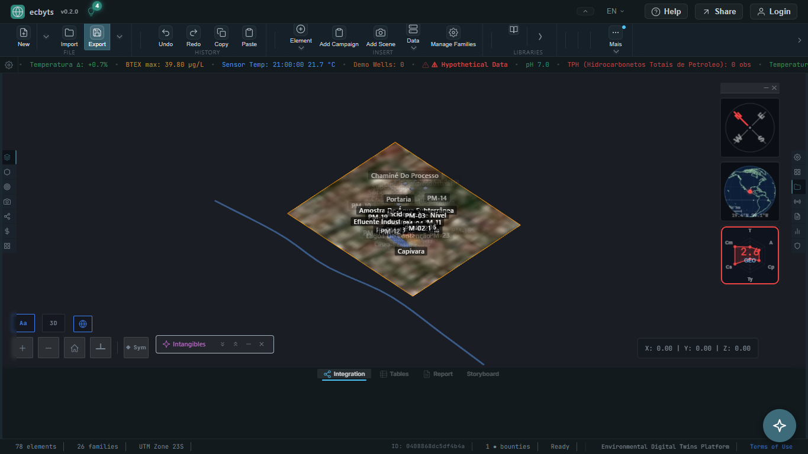
- Four label categories: element names, observation values, geology layers, and model title.
- Dynamic visibility based on zoom level and element selection.
- Labels update in real-time when observations or element properties change.
- Toggle via View > Labels in the toolbar.
Symbology Profiles
Standardized visual mapping profiles that control how elements are rendered in the 3D viewport. Symbology profiles ensure consistent visual communication across environmental site investigations.
- Profile-based rendering — Switch between symbology standards (ABNT, CETESB, custom) to change element colors, icons, and 3D shapes globally.
- Layer-aware styling — Each element family has configurable visual rules based on observation values, compliance status, and metadata.
- Legend generation — Auto-generated map legends matching the active symbology profile for reports and drawing plates.
- Custom profiles — Create organization-specific symbology standards via JSON configuration.
Activating Symbology
Go to View > Symbology in the toolbar to select or manage profiles. The active profile is persisted in the model and included in ECBT exports.
Analytics
The analytics module provides scientific analysis tools for environmental monitoring data, organized as a multi-viewport workspace.
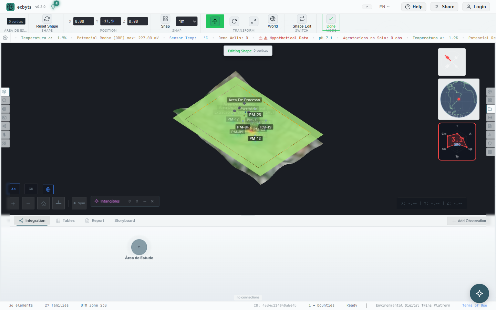
Available Analyses
- Time Series Charts — Plot observation values over time with Chart.js. Compare multiple parameters and elements.
- Mann-Kendall Trend Test — Statistical test for monotonic trends in environmental data. Identifies increasing or decreasing contamination patterns.
- Predictions — Forecast future values based on historical trends using regression models.
- Cost Analysis (CAPEX+OPEX) — Roll up remediation costs by project, fiscal year, and cost category with L1–L4 aggregation.
- GA Optimization — Genetic Algorithm-based prescriptive optimization for spatial sampling network design, using Kriging variance minimization.
- Histograms — Frequency distribution of observation values.
- Scatter Plots — Bivariate analysis across parameters or elements.
- Cross-tabulation — Pivot-table analysis of multi-dimensional observation data.
- Violations Timeline — Compliance breach tracking across time.
- Temporal KPI (D2) — Time-series scoring for data density and coverage.
EventBus Integration
All analytics viewports communicate via a central pub/sub EventBus. Selecting a data point in one viewport highlights it across all others.
Parameter Filter & Radar (FEAT-FILTER-RADAR-001)
Aggregation engine that groups environmental parameters into 7 canonical classes and computes per-element radar charts for rapid multi-contaminant assessment.
- 7 canonical groups — VOC, SVOC, Metais (metals), Físico-Químicos, Hidrocarbonetos, Pesticidas, Nutrientes. Based on EPA QAPP §3.4.2.
- 6 aggregation functions — mean, median, max, min, P95 (EPA-240/B-06-003), standard deviation — configurable per group.
- O(1) element index —
buildElementGroupIndexpre-computes group membership so radar data resolves in constant time regardless of observation count. - Per-element radar —
computeElementRadarDatareturns 7-axis scores normalized to CETESB VP/VI thresholds for immediate visual risk classification. - Drill-down (Phase 2) — Canvas 2D radar renderer + lateral drill-down panel + i18n 16 locales + synchronized 3D highlighting. Pending.
Academic Reference
P95 interpolation method per EPA-240/B-06-003 §A.1.3. Group classification follows EPA QAPP §3.4.2 analyte category schema.
Scenario Simulation
Probabilistic environmental scenario modeling using Monte Carlo and Latin Hypercube Sampling (LHS). Evaluate remediation strategies under uncertainty before committing resources.
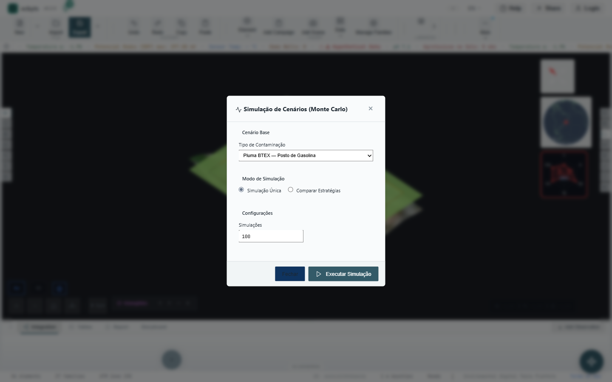
- 8 pre-defined scenarios — BTEX plume, heavy metals, chlorinated solvents, PAH, nitrate, GHG, effluent, leachate.
- 25+ remediation decisions — Pump & Treat, PRB, MNA, SVE, and more.
- P10–P90 cost ranges — CAPEX + OPEX with confidence intervals.
- Composite score —
compliance×30 + noFailure×20 + costEfficiency×20 + health×15 + speed×15
Running a Simulation
Go to Analyze > Scenarios MC in the toolbar. Select a scenario, configure distributions, and click Execute. Results target <2 s for 300 runs.
Calculator
The Calculator is a reusable filter pipeline for computing environmental metrics, compound rules, and parameter ratios from live model data.
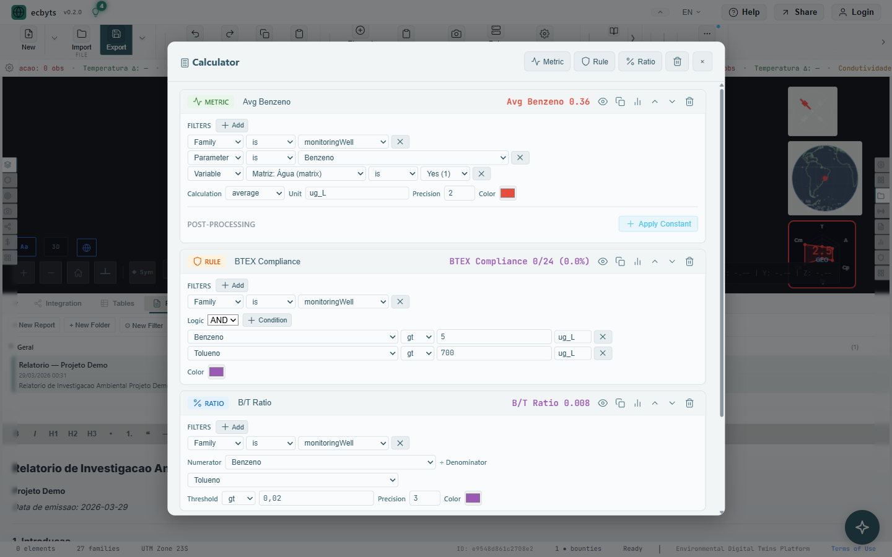
- Metrics — Compute aggregate values (mean, max, exceedance count) across elements and campaigns.
- Compound Rules — Boolean or threshold-based rules combining multiple parameters (e.g., "Benzene > VI AND pH < 5").
- Ratios — Parameter-to-parameter ratios for diagnostic analysis.
- Hypotheses — What-if scenario definitions that feed neural network predictions.
- MAC Curves — Marginal Abatement Cost curves for remediation prioritization.
Calculator items are defined via the Data Entry Matrix in the Constellation HUD and persist in the model.
Import / Export (ECBT)
The ECBT format is the unified serialization format for ecbyts models. It supports both simple and blockchain-backed models.
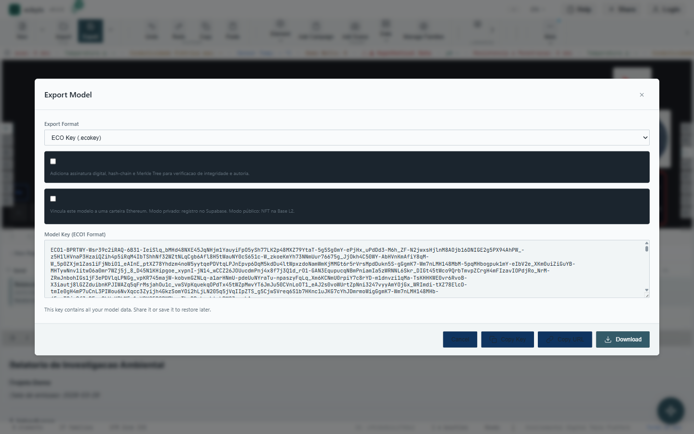
Export
- Export Key — Generates a compact ECBT string that encodes the entire model (elements, campaigns, observations, scenes, edges, calculator, constants, interpolation layers, and more). Copy and share as text.
- Export JSON — Full model as a JSON file for programmatic use.
- Download — Save the model as a downloadable file.
Import
- Import Key — Paste an ECBT key to restore a full model. Legacy ECO1 keys are also accepted for backward compatibility.
- Import JSON — Load a previously exported JSON file.
- Spreadsheet Import — Bulk import from XLSX/CSV files using the ingestion wizard.
- DXF Import — Import CAD site plans as Spatial Blueprint elements.
- URL Import — Load a model directly via URL parameter:
?key=ECBT.A0000001-...-10000000A.TBCE
ECBT Format Variants
Simple models use 6 segments. Blockchain-backed models use 10 segments (adding key ID, hash chain, Merkle root, and ECDSA signature). Both use the ECBT prefix — the format is differentiated by internal structure.
Simple (A): ECBT.A0000001-{families}-{salt}-{checksum}-{payload}-10000000A.TBCE
Blockchain (B): ECBT.B0000001-{families}-{keyId}-{prevHash}-{merkle}-{signature}-{salt}-{checksum}-{payload}-10000000B.TBCE
Compressed (C): ECBT.C0000001-{families}-{salt}-{crc32}-{payload}-10000000C.TBCE
Family codes encode which element types are present (e.g., “PWM” = Plume, Well, Marker). The checksum is a 4-character hex for integrity verification. Legacy ECO1 keys (without the ECBT envelope) are still accepted on import.
Files Module
Cloud-based file management integrated with Supabase Storage. Attach documents, images, and reports to your environmental model with full versioning and access control.
- Per-project storage — Files are organized by project with automatic folder structure.
- Drag & drop upload — Upload files directly from the file manager panel. Supports images, PDFs, DOCX, XLSX, DXF, and more.
- Inline preview — Preview images and documents without downloading. PDF and image files render inline.
- Element attachments — Link files to specific elements (e.g., well logs, lab reports, photos).
- Quota-aware — Storage usage counts against your plan quota. Free tier: 50 MB. Pro: 5 GB. Scale: 50 GB.
Accessing Files
Open the Files panel from the right sidebar or use More > Files in the toolbar. Files are synced to Supabase Storage and available across devices when authenticated.
IFC / BIM Export
Export your environmental model to IFC4 format (ISO 16739-1:2018), the international BIM standard for integration with Autodesk Revit, ArchiCAD, and BIM 360.
- Each element exported as an
IfcBuildingElementProxywith full 3D placement. - No external dependencies — pure STEP text output (ISO 10303-21).
- Axis conversion: Three.js Y-up → IFC Z-up automatically handled.
- Property sets:
ecbyts_Metadata(family, id, name) andecbyts_Observations(last observation per parameter).
Exporting to IFC
Go to File > Export > IFC (.ifc). The file can be opened in any IFC-compliant viewer (BIM Vision, IFC.js, xBIM).
Power BI Integration (BI v1)
Tabular BI API designed for analytics tools like Power BI. Endpoints expose a star-model friendly structure.
GET /api/bi/v1/schema— Table dictionary and column types.GET /api/bi/v1/dim_elements— Elements dimension.GET /api/bi/v1/dim_campaigns— Campaigns dimension.GET /api/bi/v1/fact_observations— Observations fact table (filterable by date, element, campaign, parameter).GET /api/bi/v1/fact_edges— Element relationship facts.
Interpolation
Spatial interpolation creates continuous surfaces from point observations, essential for mapping contamination plumes and terrain.
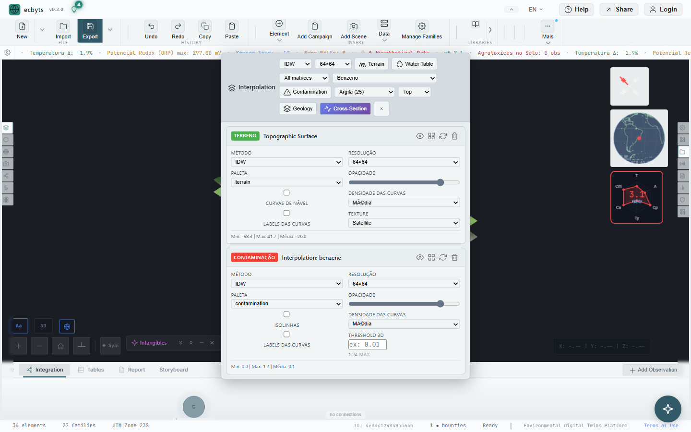
- IDW (Inverse Distance Weighting) — Simple, fast interpolation weighted by distance. Built-in, zero dependencies.
- RBF (Radial Basis Functions) — Smooth interpolation using radial basis functions. Loaded on demand via CDN.
- Kriging — Geostatistical interpolation providing best linear unbiased estimates with uncertainty quantification. Loaded on demand via CDN.
- Terrain Interpolation — Generate terrain surfaces from elevation data points.
Performance
Heavy interpolation computations run in a Web Worker off the main thread. Results are persisted to IndexedDB to avoid recomputation on reload.
Potentiometric Maps & Plume Generation
Automated spatial analysis from monitoring campaign data, generating potentiometric surfaces and contamination plumes.
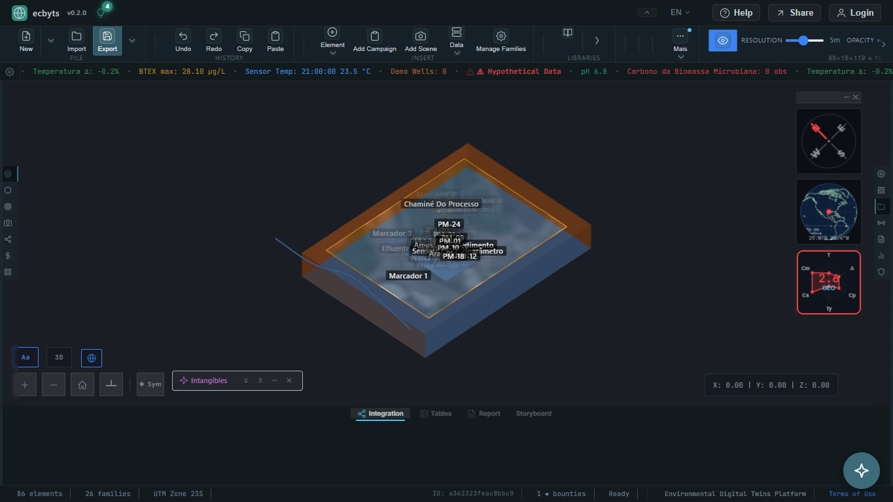
- Potentiometric map — Generated from
water_levelobservations using Kriging or IDW interpolation. Shows groundwater flow direction and hydraulic gradient. - Contamination plume generation — Create plume boundaries from campaign concentration data, automatically identifying hotspots and extent.
- Contour isolines — Labeled contour lines with configurable intervals for precise value mapping.
- Coordinate deduplication — Handles co-located wells (multiple wells at similar coordinates) by averaging or selecting representative values.
Generating a Potentiometric Map
Ensure your wells have water_level observations in at least one campaign. Go to the Interpolation panel in the Constellation HUD, select the campaign and Water Table layer type, then click Generate.
Voxel Modeling
3D subsurface modeling using volumetric voxels for contamination plume visualization and geochemical analysis.
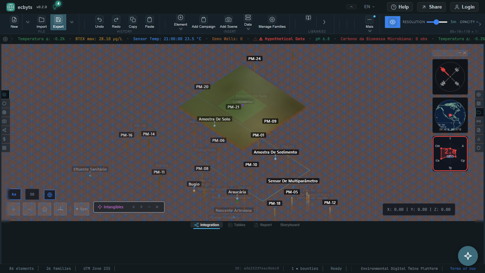
- Discretize the subsurface into a 3D grid of voxels, each holding parameter values.
- Apply color ramps and opacity thresholds to visualize contamination extent in three dimensions.
- Combine with interpolation layers for integrated subsurface analysis.
- Voxel data is persisted to IndexedDB for fast reload.
Neural Networks
Custom neural network module for predictive modeling of environmental data.
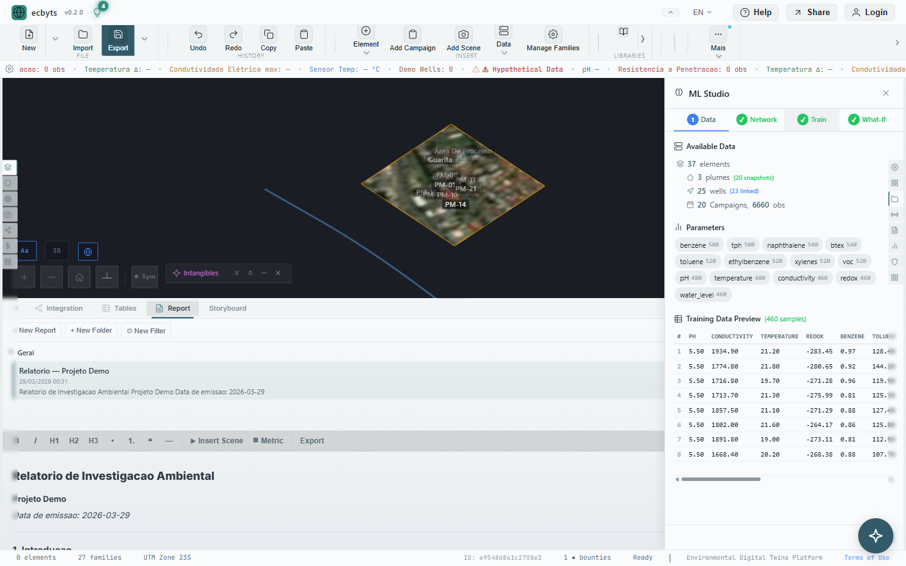
- SimpleNN — Vanilla JavaScript neural network implementation (no external frameworks). Trained on calculator metric values from real element observations.
- Web Worker Training — Training runs off the main thread to keep the UI responsive.
- What-If Engine — Run scenario predictions by modifying input parameters and observing predicted outcomes.
- Plume Connector — Connect trained networks to plume visualization for dynamic contamination prediction.
- Named NN instances are persisted to IndexedDB and included in ECBT exports.
Fine-Tuning Pipeline
Domain-specific fine-tuning pipeline for training language models on environmental data. Uses Qwen2.5 as the base model with LoRA adapters for efficient specialization.
Pipeline Stages
| Stage | Description |
|---|---|
| Data Curation | Extract training pairs from environmental reports, observations, and compliance data. Auto-generates instruction/response pairs from PDPLU records. |
| Format Conversion | Convert curated data to ChatML/Alpaca format compatible with fine-tuning frameworks (Unsloth, Axolotl). |
| Training | LoRA fine-tuning with rank 16, alpha 32. Targets: q_proj, v_proj, k_proj, o_proj. Runs on consumer GPUs (RTX 3090+). |
| Evaluation | Automated benchmarks: environmental term accuracy, regulatory citation, unit conversion, and CONAMA/CETESB compliance checks. |
| Deployment | Export GGUF quantized model for local inference via Ollama or LM Studio integration. |
Training Data Sources
The pipeline ingests ecbyts model data (elements, observations, campaigns), environmental regulations (CONAMA, CETESB), and domain glossaries to produce a model specialized in Brazilian environmental consulting terminology and workflows.
ML Recognition
Machine learning modules for automated image analysis and environmental feature detection.
- Image Classification — Classify aerial or site images using neural network models.
- SLIC Superpixels — Segment images into visually coherent regions for pre-processing.
- YOLOS Object Detection — Detect environmental features (tanks, wells, buildings) in aerial imagery.
- SAM (Segment Anything) — Interactive segmentation for precise boundary extraction.
Aerial Georeferencing
Workflow for georeferencing user-owned aerial or satellite images onto the 3D model.
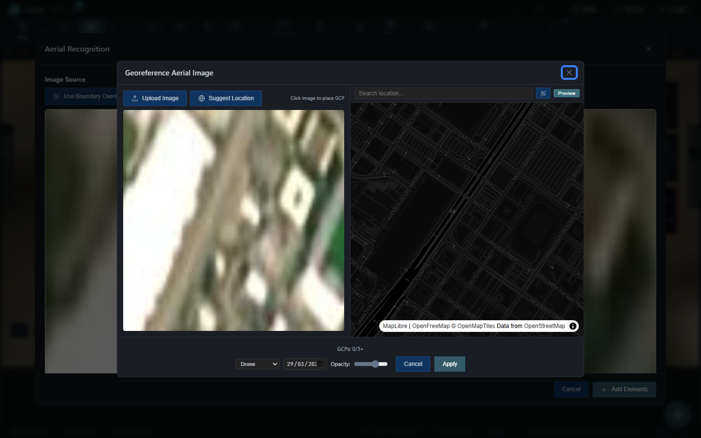
- Interactive GCP placement — Click and drag Ground Control Points on both the image and the map (minimum 3 points required).
- EXIF GPS bootstrap — Optionally reads GPS coordinates from JPEG EXIF metadata for initial placement.
- AI "Suggest Location" — Uses an LLM provider (OpenAI, Claude, or Gemini) to suggest the geographic location from image content.
- Live map preview — Real-time overlay of the image on the map with opacity slider and satellite toggle.
- Applies a georeferenced boundary element with the image as an overlay texture rendered in the 3D viewport.
Current Limits
GeoTIFF embedded coordinates are not auto-read yet (manual GCP works). Images >5 MB increase ECBT payload size and trigger a warning.
Blockchain Integrity
Data integrity is enforced through cryptographic primitives, ensuring environmental data cannot be tampered with after collection.
- SHA-256 Hashing — Every data point gets a unique cryptographic fingerprint.
- ECDSA Signatures — Digital signatures prove data authorship and prevent forgery (P-256 via Web Crypto API).
- Merkle Trees — Efficient verification of data sets — any modification invalidates the tree root.
- Hash Chains — Sequential linking ensures chronological ordering cannot be altered.
- AES Vault — Encrypted storage for sensitive key material.
Audit Trail
The crypto module works transparently. When blockchain mode is enabled, every observation and campaign update is automatically hashed and chained. The ECBT export includes the full integrity proof.
EIS — EnviroTech Integrity Score
The EIS (EnviroTech Integrity Score) evaluates the quality and trustworthiness of an environmental model using the 3CTA+ framework — a non-compensatory geometric weighted mean across 6 axes.
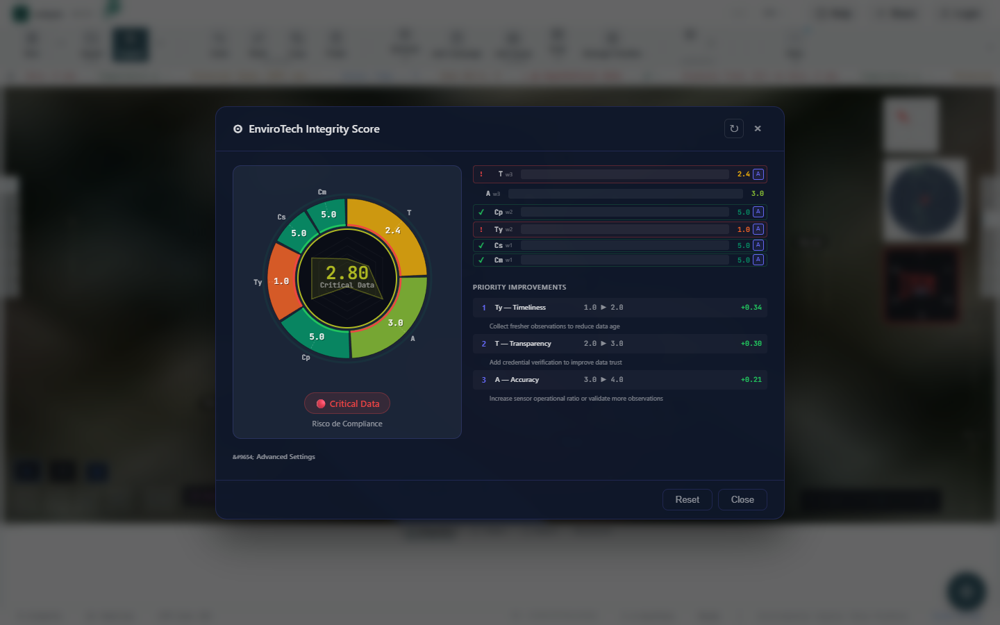
Score Axes
| Axis | Weight | What It Measures |
|---|---|---|
| T — Transparency | 3 | Evidence of data origin and provenance. Enhanced by academic credentials (1.0x–2.0x). |
| A — Accuracy | 3 | Sensor health, data accuracy, and measurement precision. |
| Cp — Completeness | 2 | Coverage uptime — planned vs. executed readings across the monitoring network. |
| Ty — Timeliness | 2 | Delivery latency — how quickly data reaches the platform after collection. |
| Cs — Consistency | 1 | SI unit consistency and internal coherence across datasets. |
| Cm — Comparability | 1 | Taxonomy alignment — consistent naming and classification enabling cross-site comparison. |
Score Interpretation
- ● ≥ 4.50 — High integrity. Model is reliable for decision-making.
- ▲ ≥ 3.50 — Moderate integrity. Review flagged axes before use.
- ◆ < 3.50 — Low integrity. Significant data quality issues.
Veto Mode
In veto mode, if Technicality (T) or Accuracy (A) scores ≤ 2, the EIS is automatically set to 0.0 — a "kill switch" that flags fundamentally unreliable data regardless of other scores.
SAO Matrices
Environment, Safety & Health (ESH) risk assessment using Systematic Assessment of Operations matrices.
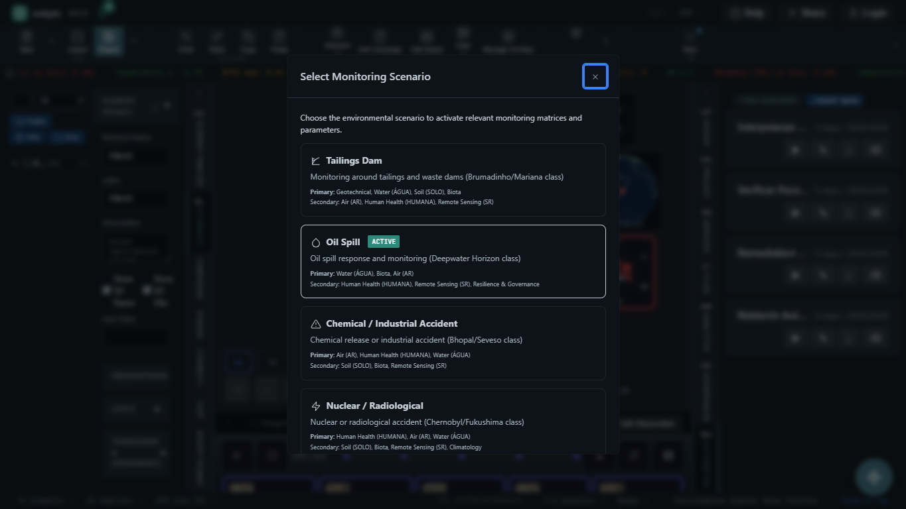
- Multi-scenario evaluation — Assess risks across environmental, occupational safety, and operational health domains simultaneously.
- Parameter-based risk scoring — Observations feed directly into matrix calculations for evidence-based risk levels.
- Unit-aware calculations — Automatic unit conversion ensures consistent risk scoring regardless of input units.
- 9 parameter definition files covering environmental, safety, and health indicators.
Compliance Validation
Multi-level compliance validation against environmental regulatory standards.
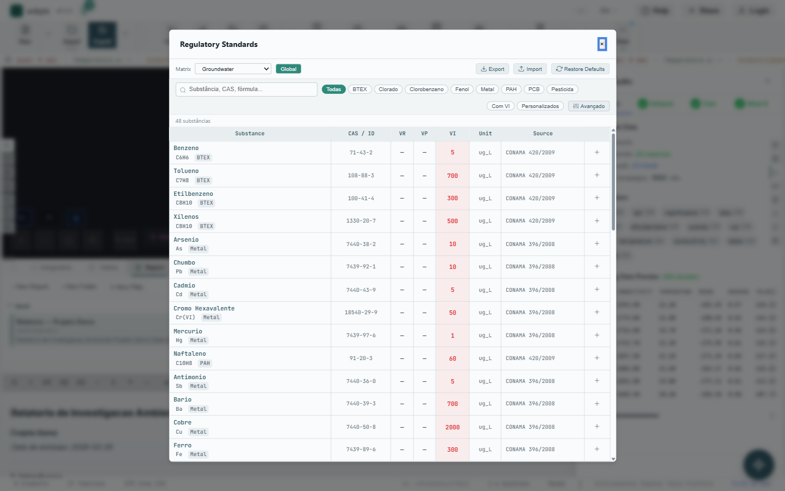
Built-in Regulations
- CONAMA 420/2009 — Brazilian soil and groundwater quality standards (VR, VP, VI thresholds).
- CETESB DD-256/2016 — São Paulo state reference cleanup values.
- NR-15 — Occupational exposure limits.
Domain Validator Engine
A generic, extensible validation engine that loads domain-specific rules from JSON templates:
- 3-level validation: observation → element → site.
- Thresholds keyed by CAS Number for unambiguous substance identification.
- Custom domain templates can be imported from
docs/templates/(e.g., EPA GAC, GHG-BR). - Validation results feed the EIS Cs (Consistency) and Cm (Compliance) axes.
Validation Profiles
Pluggable compliance rule engine for domain-specific validation beyond the built-in CONAMA/CETESB rules.
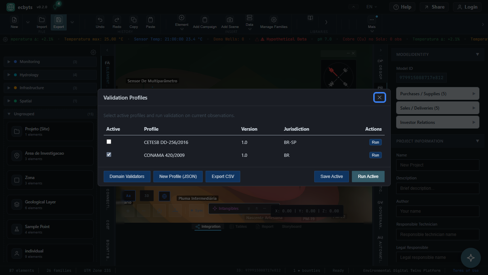
- JSON-based profiles — Define compliance rules in portable JSON format (CETESB DD-256, CONAMA 420, EPA GAC, custom).
- Rule types — Threshold checks, required field validation, unit verification, and statistical outlier detection.
- Batch validation — Validate all observations at once with results exportable as CSV.
- Import community-contributed profiles from
docs/templates/or create your own.
Custom Profiles
Create a JSON file following the domain validator schema, add your thresholds keyed by CAS Number, and import via Analyze > Domain Validator. Profiles are persisted in the model.
Constants Manager
User-defined constants for scientific calculations: emission factors, uncertainty values, unit conversion factors, and site-specific parameters.
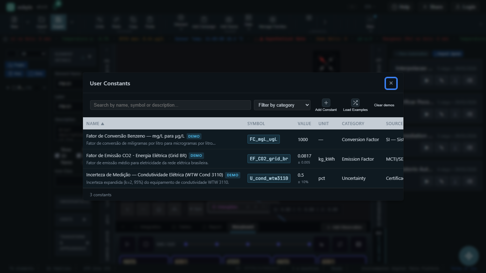
- Constants are referenced by the Calculator engine for metric computations.
- Editable via the Constants Modal (Optimize tab).
- Persisted in the model and included in ECBT exports.
Guided Workflows
Step-by-step guided workflows help users through standard environmental engineering processes.
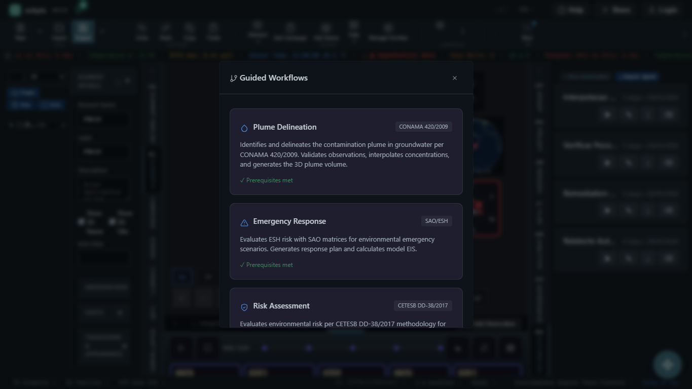
- Workflows are defined declaratively and executed by the workflow engine.
- Each step can collect data, validate inputs, and call platform actions.
- Workflow events integrate with the EventBus for real-time progress tracking.
- Access via Analyze > Workflows.
Spatial Blueprint (DXF)
Import CAD site plans as Spatial Blueprint elements using the DXF ingestion pipeline.
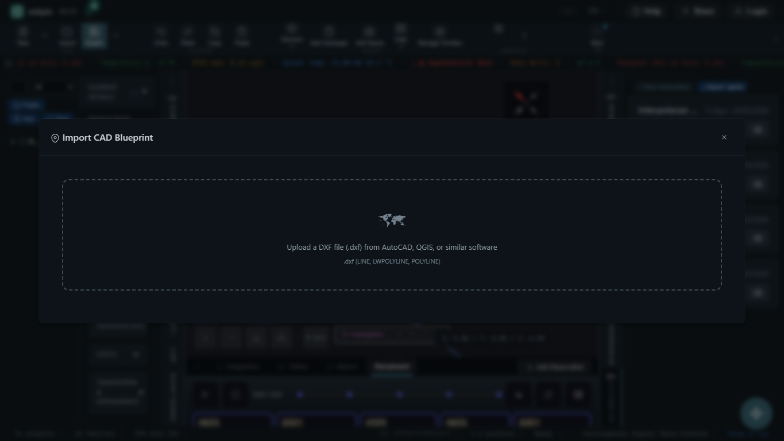
- Supports DXF files from AutoCAD, QGIS, and other CAD/GIS tools.
- Parses layers, polylines, circles, text, and blocks.
- Creates a
blueprintfamily element with the imported geometry rendered in the 3D viewport. - Use File > Import DXF to start the import process.
Data Ingestion
Bulk import environmental data from spreadsheets and documents.
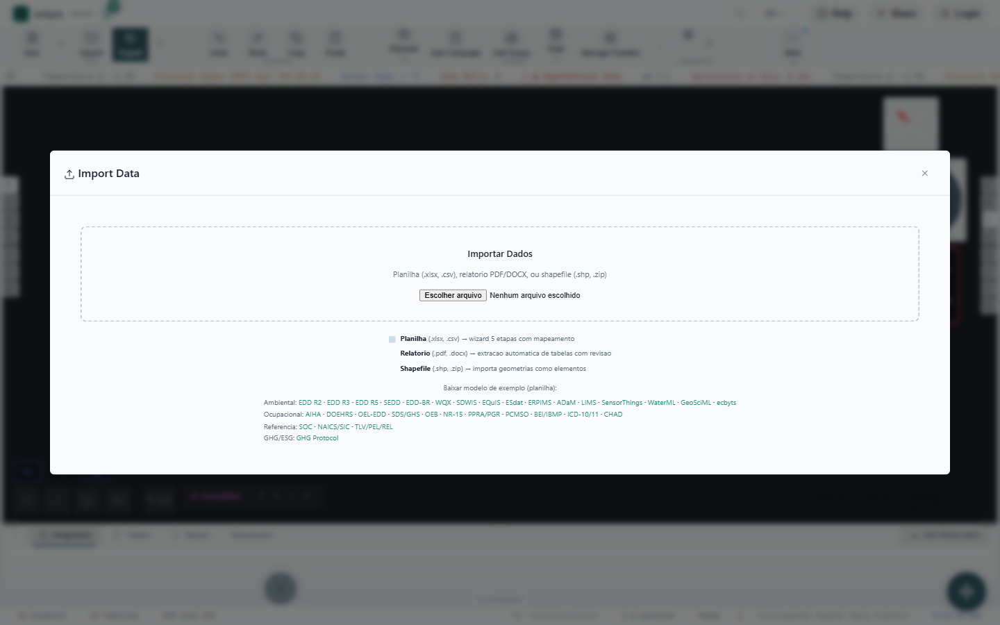
Spreadsheet Import (EDD)
- Import XLSX and CSV files with the bulk import wizard.
- Map columns to element properties, parameters, and campaign dates.
- Supports Electronic Data Deliverables (EDD) format from laboratories.
Rich Document Ingestion (v0.2)
- Extract data from PDF and DOCX reports using neuro-symbolic processing.
- PDF extraction via pdfplumber server-side for high-fidelity table parsing.
- Split-view interface: source document on the left, extracted data on the right with source grounding highlights.
- Automatically identifies tables, measurements, and structured data.
- Includes a Cost Framework L1 for extracting financial data from environmental reports.
- AI-powered analyzer with decision tracking for audit trails.
Data Entry Matrix
Bulk data entry interface for observations, designed for rapid field data input without navigating between modals.
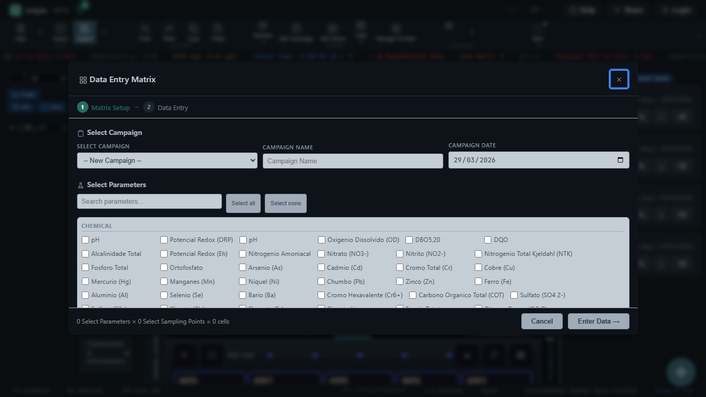
- Spreadsheet-like grid — Tabular interface for entering multiple observations at once. Select elements as rows, parameters as columns.
- Parameter and unit selection — Configure which parameters appear per column with automatic unit defaults.
- Accessible from the Constellation HUD (bottom panel) — Data Entry tab.
- Values are validated in real-time against compliance thresholds (highlighted in red when exceeding limits).
Storyboard & Sequencer
Create animated sequences and video presentations from your environmental model.
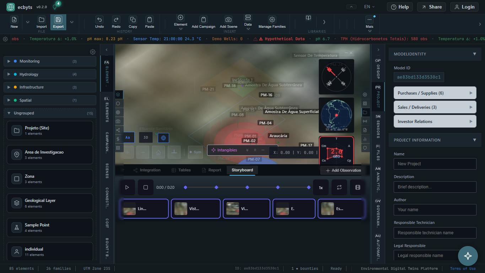
- Timeline Sequencer — Arrange scene snapshots and camera transitions on a timeline.
- Cluster Animations — Group related elements for coordinated visual storytelling.
- Playback — Preview animations directly in the 3D viewport.
- Plume Animation — Animate contamination plume evolution over time.
- Veo 2 Video Generation — Generate photorealistic environmental videos from scene descriptions using Google Veo 2. Deterministic seeding ensures reproducible outputs.
- Keyframe Validation — Automated consistency checks between keyframes: camera path smoothness, element visibility continuity, and temporal coherence.
- Scene Seeding — Deterministic random seeds for reproducible camera paths and animation sequences across exports.
Pipelines (BPMN)
Automate multi-step workflows using a BPMN-inspired pipeline system.
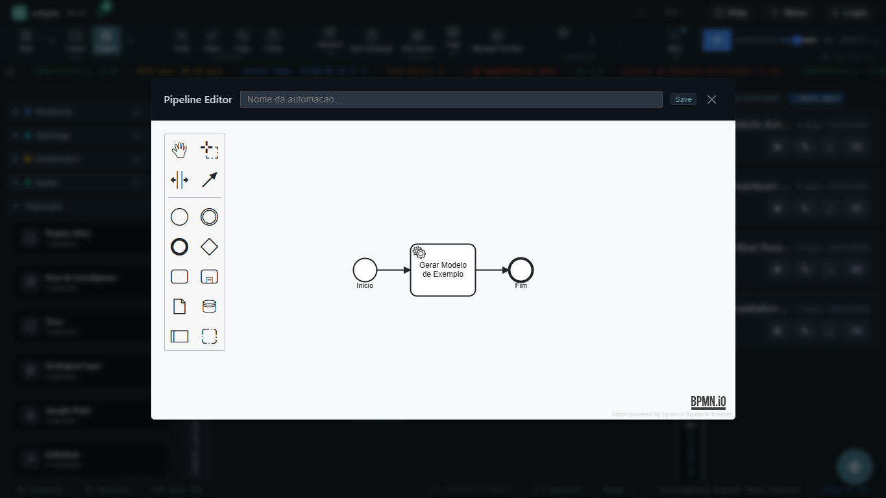
- Define pipelines as sequences of platform actions with conditional branching.
- A Pipeline Editor UI for visual pipeline design.
- Pipeline executor runs registered actions with a security allowlist (~15 safe action names).
- Pipeline events integrate with the EventBus for status tracking.
- Treatment system integration — Treatment System elements can link to operational pipelines. Run, monitor, and track execution from the element inspector.
Treatment Systems
Model and track remediation and treatment infrastructure linked to operational pipelines. The treatment_system family connects physical treatment equipment to automated workflows and cost accounting.
- System types — Pump & Treat, SVE (Soil Vapor Extraction), Air Sparging, PRB (Permeable Reactive Barrier), MNA (Monitored Natural Attenuation), ISCO, bioremediation, oil-water separators, septic systems, and custom configurations.
- Operational parameters — Track flow rates, extraction volumes, treatment efficiency, energy consumption, and maintenance schedules as observations.
- Pipeline integration — Link treatment system elements to BPMN pipelines for automated monitoring, alerting, and reporting. Run pipelines from the element inspector.
- Cost tracking — CAPEX + OPEX rollup per system with L1–L4 cost aggregation feeding the governance module.
- Compliance targets — Define target concentrations and track progress toward CMA (Concentração Máxima Aceitável) goals over time.
Adding a Treatment System
Use Insert > Add Element and select the Treatment System family. Configure the system type, link to wells and plumes via edges, and optionally attach a BPMN pipeline for operational automation.
Well Geology
Advanced geological analysis modules for monitoring wells, based on Brazilian and international stratigraphic standards.
- Geological cross-section — SVG cross-section correlating lithologic layers across wells with ABGE-standard patterns and colors.
- Stratigraphy engine — Normalizes raw lithologic data into ISO 14688 / AGS4 compatible schema with SUCS classification.
- Well compliance checker — Validates wells against NBR 15495-1:2007 (ABNT standard). Scores: ≥80 = ok, 50–79 = warning, <50 = error.
- Constructive profile — SVG well construction diagram showing casing, screen, grout, and filter pack.
Accessing Well Geology
Select monitoring wells, then go to Insert > Well Profile. Tabs: constructive profile, lithologic log, cross-section, and NBR 15495-1 compliance report.
Issues 3D (BCF-like)
3D-anchored non-conformity markers for collaborative issue tracking, inspired by BIM Collaboration Format (BCF).
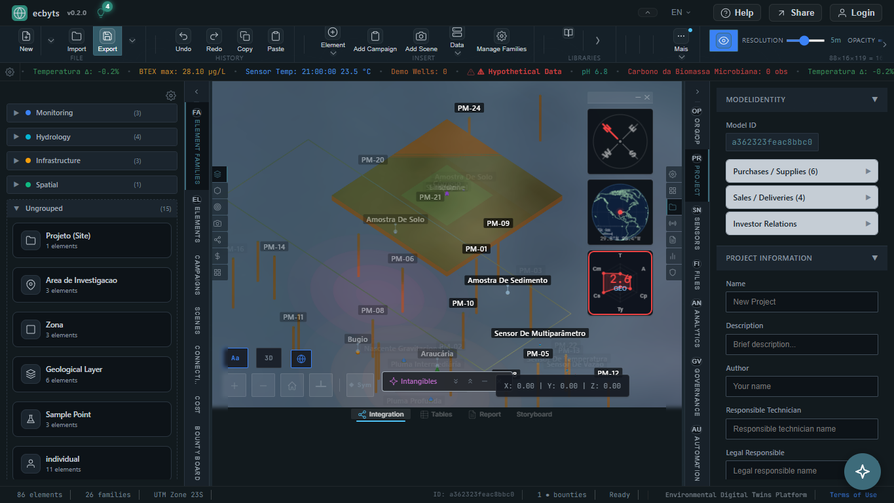
- Create spatially-anchored issue markers directly in the 3D scene.
- Map-indexed for O(1) lookup performance.
- Persisted to IndexedDB with a sync queue for offline-first operation.
- 3-way merge conflict resolution for multi-user scenarios.
Data Audit
Detect anomalies and potential fraud in environmental datasets.
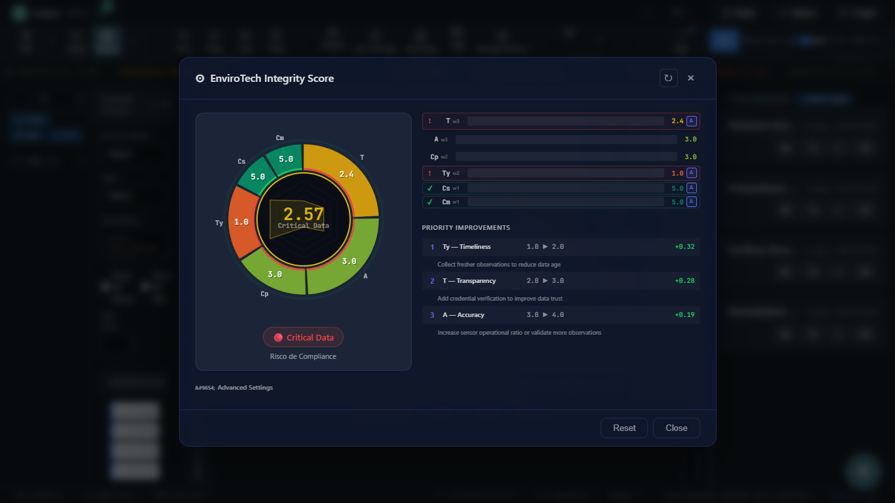
- Benford's Law Analysis — Check first-digit distribution of observations against the expected Benford distribution. Deviations may indicate fabricated or manipulated data.
- Greenwashing Detection — Flag suspiciously uniform or implausible environmental metrics.
Internationalization (i18n)
16 fully-translated locales with lazy loading, interpolation, pluralization, and RTL support.
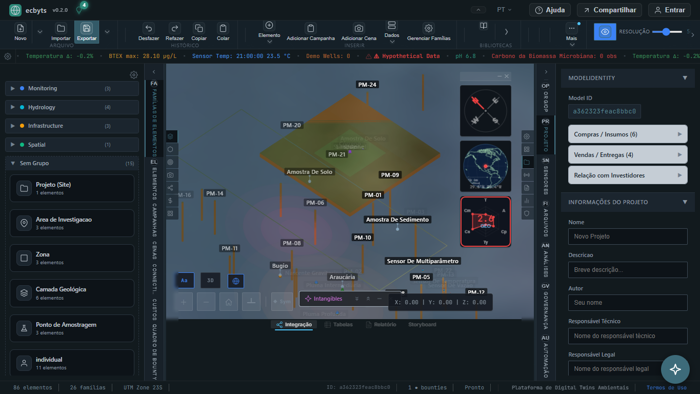
| Code | Language | Code | Language |
|---|---|---|---|
pt-BR | Português | en-US | English |
es-LA | Español | zh-CN | Chinese |
fr-FR | Français | de-DE | Deutsch |
ja-JP | Japanese | it-IT | Italiano |
ko-KR | Korean | ru-RU | Russian |
id-ID | Bahasa Indonesia | hi-IN | Hindi |
tr-TR | Türkçe | pl-PL | Polski |
sv-SE | Svenska | ar-SA | Arabic (RTL) |
- Lazy loading — Only 1–2 JSON files loaded per session for fast startup.
- Interpolation —
t('key', { count: n })for dynamic values in translated strings. - Pluralization —
tp('key', n)viaIntl.PluralRulesfor grammatically correct plural forms. - Regional formatting — Numbers, dates, and currencies formatted via
Intl.*APIs. - RTL support — Arabic locale triggers
dir="rtl"on the root element. - Switch languages via the titlebar language selector (EN / PT / ES) or any of the 16 locales in settings.
Random Model Generator
One-click demo model generation with realistic environmental data for exploration, training, and presentations.
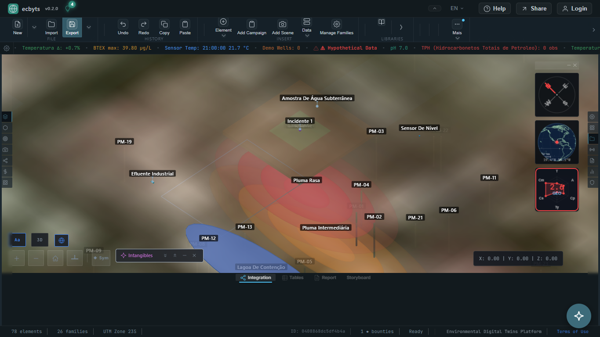
- 1 boundary with 6 geological strata.
- 3–8 monitoring wells, 1–4 contamination plumes, 1–3 tanks, 1–4 buildings.
- Lakes, rivers, springs, and general markers.
- ESG elements: emission sources, waste streams, effluent points, habitats, individuals, incidents, areas.
- Mining & civil: dams, open-pit excavations.
- Fleet & operations: vehicles, equipment, treatment systems, linear infrastructure.
- Route & flow elements for hydraulic connectivity.
- 3–5 sampling campaigns spanning 2 years with observations per element.
- Edge relationships (wells→plumes, incidents→areas, fauna→habitats).
- 50+ parameter types with realistic value ranges.
Generating a Random Model
Click File > Random in the toolbar. The model includes fully populated campaigns with observations, making it ideal for testing analytics, interpolation, and export features.
AI Assistant
The built-in AI assistant provides natural language interaction with the platform through a multi-provider LLM engine.
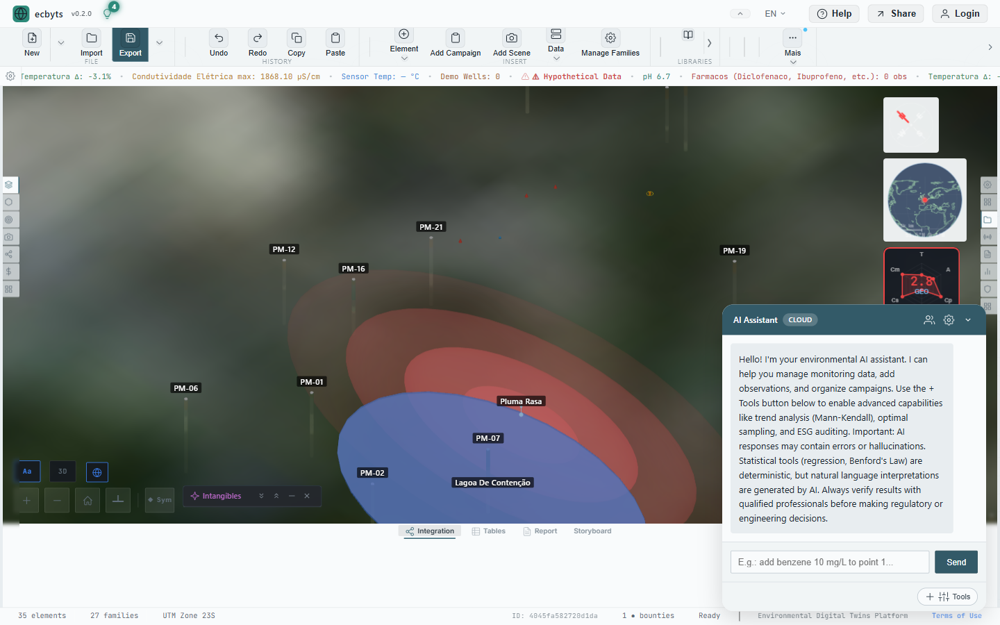
Capabilities
- 442+ dynamic actions — Registry-based dispatch across 18 semantic categories (Model, Analytics, Visualization, Import/Export, Compliance, Infrastructure, and more).
- Natural language commands — "Add a monitoring well at coordinates 100, 50" or "Show me the benzene trend for Well-01".
- Data analysis — Ask questions about your model data and get AI-powered insights.
- Multi-provider support — Works with Cloud providers (OpenAI, Claude, Gemini), local models (Ollama, LM Studio), browser-based (Transformers.js, WebLLM).
- Agentic loop — Complex tasks are broken into a multi-step plan and executed autonomously with tool calling. Supports up to 10 chained actions per turn.
- 3-tier prompt system — System prompt (identity), registry injection (dynamic context), and user message (intent) for precise action resolution.
- MCP integration — External AI agents can interact via the Model Context Protocol server. See MCP Server.
Opening the AI Assistant
Click the AI Assistant floating widget button in the bottom-right corner of the screen.
LLM Dynamic Dispatch
The AI Assistant uses a registry-based dynamic dispatch system with 442+ registered actions organized in 18 semantic categories. Instead of hardcoded function calls, actions are discovered and executed dynamically based on user intent.
3-Tier Prompt Architecture
| Tier | Role | Contents |
|---|---|---|
| System Prompt | Identity & rules | Platform identity, capabilities summary, response format rules, safety guardrails. |
| Registry Injection | Dynamic context | Current model state, available actions grouped by category, active element context. |
| User Message | Intent | Natural language request with optional element/parameter references. |
Semantic Categories
Model
Element CRUD, bulk operations, property edits
Analytics
Trends, predictions, statistical tests
Visualization
Camera, layers, labels, symbology
Import/Export
ECBT, JSON, XLSX, DXF, IFC, reports
Compliance
CONAMA, CETESB, domain validators
Infrastructure
Pipelines, workflows, remediation
Agentic Loop
For complex tasks, the AI decomposes the request into a multi-step plan, executes each action sequentially via tool_use calls, and reports results with a structured summary. The loop supports up to 10 chained actions per turn.
MCP Server
A Model Context Protocol (MCP) server that exposes ecbyts functionality to external AI agents and IDE integrations (Claude Desktop, Cursor, VS Code Copilot).
- 14 tools exposed — Model queries, element creation, observation insertion, analytics execution, report generation, and more.
- 4 resources — Model summary, element list, campaign list, and observation data as structured context.
- Stdio transport — Runs as a local process communicating via JSON-RPC over stdin/stdout.
- Quota billing — MCP tool calls count against the user's API quota (1 call = 1 unit). Free tier: 100 calls/month.
- Security — Read-only by default. Write operations require explicit
--allow-writeflag.
# Start the MCP server
node scripts/ecbyts-mcp-server.js --project ./my-model.json
# Configure in Claude Desktop (claude_desktop_config.json)
{
"mcpServers": {
"ecbyts": {
"command": "node",
"args": ["scripts/ecbyts-mcp-server.js", "--allow-write"]
}
}
}IDE Integration
Add the MCP server to your IDE's AI configuration to let AI assistants query and modify ecbyts models directly from your development environment.
Reports
Generate professional reports from your environmental model data.
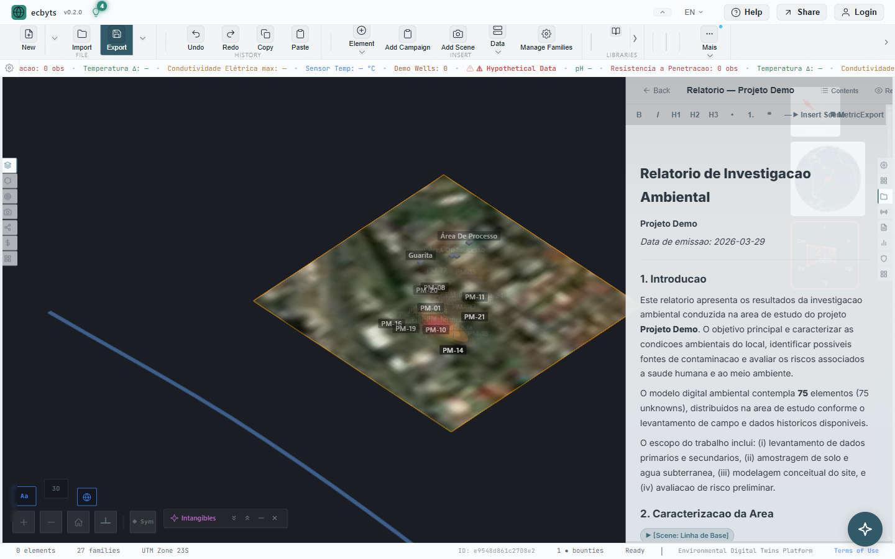
- PDF Export — Create formatted reports with charts, tables, maps, and compliance summaries.
- DOCX Export — Generate editable Word documents for further customization.
- Report Editor — Customize report sections, add narrative text, and select which data to include. Supports filter presets.
- Drawing Plate — Export technical drawings with title blocks and scales.
- Multi-Report Manager — Maintain multiple report templates with tree-view navigation.
- Access via File > Drawing Plate or through the report panel.
Governance
Project management tools for environmental remediation contracts.
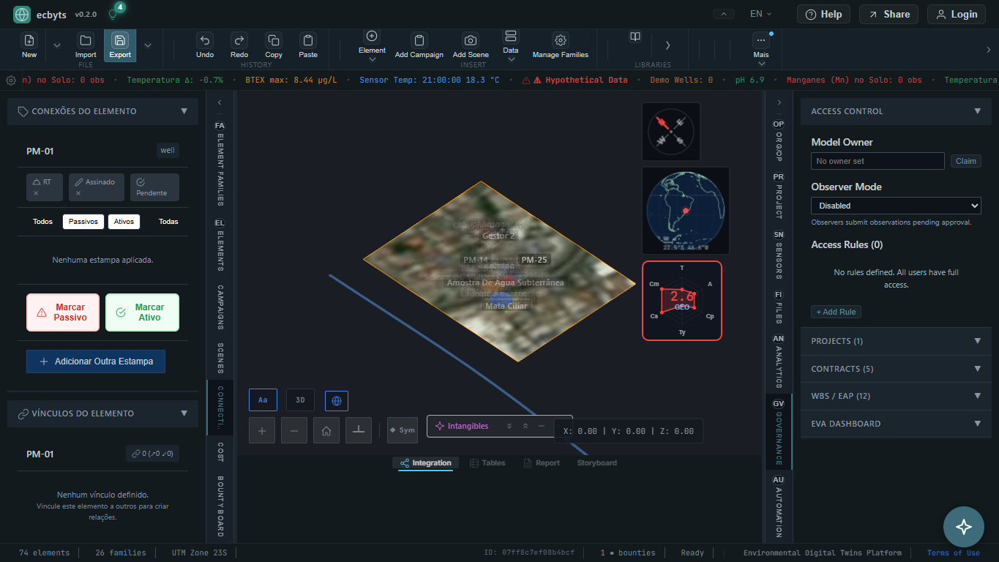
- Contracts — Track environmental service contracts with scope, dates, and milestones.
- WBS (Work Breakdown Structure) — Organize remediation activities hierarchically.
- EVA (Earned Value Analysis) — Track project performance: planned vs. actual cost and schedule.
- Project Registry — Central directory of projects with metadata and status.
Timekeeper
Cross-project time tracking panel embedded in the Constellation HUD. Log hours against projects, phases, and resources without leaving the modeling environment.
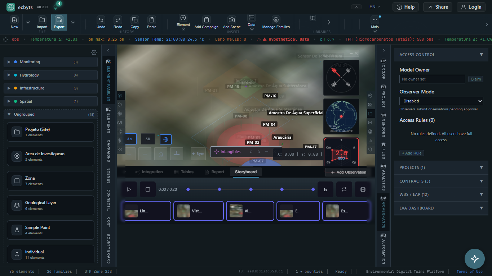
| Section | Description |
|---|---|
| Summary | Weekly, monthly, and lifetime hour totals across all projects. |
| Live Timer | Clock-in / clock-out with project, phase, and resource selectors. Elapsed time shown in real time. |
| Quick Entry | Fast hour entry for retroactive time logging. |
| Cross-Project Table | Full timesheet view with filters by project, resource, and date range. |
Opening Timekeeper
Expand the Constellation HUD (bottom panel) and select the Timekeeper tab. Active timer state persists across page reloads.
IoT Sensors
Connect real-time environmental sensors to your digital twin for continuous monitoring.
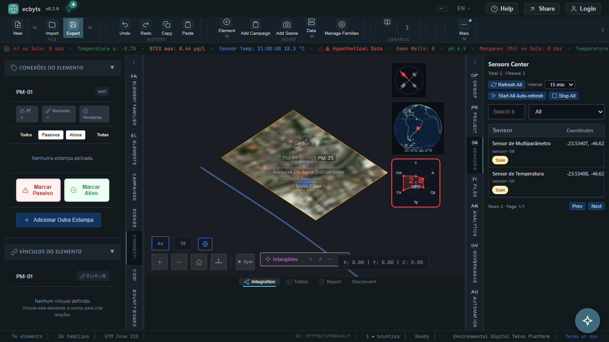
- Link sensors to elements for automatic observation updates.
- Configure polling intervals and alert thresholds.
- Sensor data feeds into the same analytics pipeline as manual observations.
Guided Tours
Interactive step-by-step tutorials that guide you through platform features.
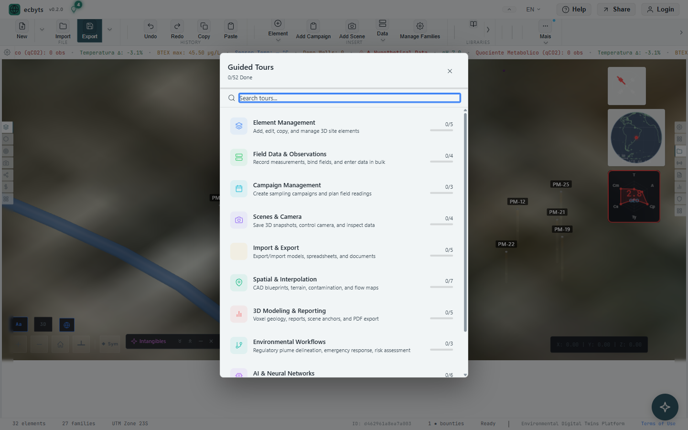
- 50 guided tours covering ~230 steps across all major features.
- Tours highlight UI elements, explain concepts, and walk through workflows.
- Available in all supported languages (English, Portuguese, Spanish).
- Access via More > Guided Tours or the Tour Picker.
Map Picker
Interactive georeferencing tool for setting your site's real-world location.
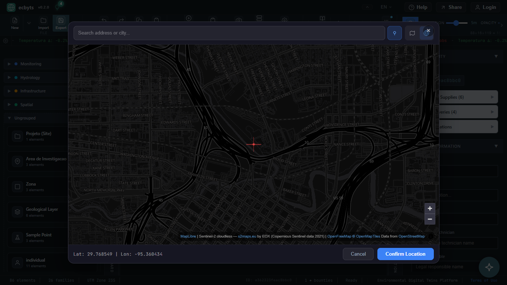
- Click on a map to set the UTM origin for your environmental model.
- Automatic UTM zone and CRS detection (including SIRGAS 2000 for Brazilian sites).
- Aerial imagery overlay for spatial context.
- Available as an init mode from the Welcome Screen or via View > Map Picker.
Multi-Model Tabs
Work with multiple environmental models simultaneously — each tab is an isolated namespace for elements, campaigns, scenes, and analytics.
- Independent state — Elements, observations, and interpolations in one tab don't leak into another.
- Cross-tab lock via BroadcastChannel — Prevents concurrent edits of the same model across browser tabs.
- Per-tab autosave — Each tab persists to a dedicated IndexedDB lane.
- ECBT round-trip preserves tab identity — Export and re-import keeps the tab's logical model separate.
Uncertainty (UNC-001 — GUM Tier 1)
First-order uncertainty propagation for environmental measurements following ISO GUM (Guide to the Expression of Uncertainty in Measurement).
- Propagation — Sum / product / linear formulas with covariance-aware combined standard uncertainty.
- Quality badge — Matrix-agnostic classifier (soil / water / air) decorates every observation with a data-quality indicator.
- ECBT v3 envelope — Uncertainty metadata travels inside exported keys (opt-in via flag).
- Visible in the Uncertainty Hub panel (ribbon > View) and inline in Data Entry Matrix.
Taxonomy / Data Dictionary
Regulatory taxonomy layer that adds auxiliary, standard-aligned fields to elements (EPA WQX, ABNT NBR, CETESB DD-256, CONAMA 420).
- Field resolver — Resolves a field by
{taxonomy, key, locale}and returns label, unit, valid-range, citation. - Picker modal — Pick fields from regulatory standards without leaving the form.
- Domain-aware validation — Combines with Validation Profiles for end-to-end compliance checks.
Historical Map Upload & Georeferencing
Upload raster maps (PNG/JPEG) and georeference them with 4+ control points using least-squares affine transform. Includes an OCR pipeline for elevation extraction from topographic maps.
- 4-point GCP workflow — Click to add control points; enter pixel (X, Y) and UTM (Easting, Northing) for each.
- RMS gate 5 m — Validates georef quality per CETESB mapping guidelines before accepting.
- TFW world-file export — ESRI-compliant sidecar for GIS interoperability.
- Contour extraction — Marching-squares + edge chains turn isolines into
generic:isolineelements in the 3D scene. - OCR elevation pipeline —
elevationClassifierreads numeric labels from scanned topographic maps (BR and US formats),contourLabelermatches labels to contour polylines,contourGeoreferencerassigns Z values, simplifies polylines, and exports georeferenced isolines as GeoJSON. - GeoJSON export — Georeferenced contours exported as
FeatureCollectionfor GIS interoperability. - Ribbon > Data > Historical Map Upload.
PhotoLog
Field photo registry with EXIF GPS extraction, AI vision analysis, and 3D scene markers.
- Capture sources — Camera, upload, clipboard paste.
- Offline-first — IDB stores photos locally; Supabase sync when online.
- EXIF GPS — Auto-positions photos as 3D markers in the scene at their capture location.
- AI vision analysis — Describes the photo, detects families (buildings, vehicles, vegetation), flags anomalies.
- Access via Data > PhotoLog or the PhotoLog button in Files.
Technical Diagrams (ISA S5.1)
Canvas-based technical diagram editor with process-industry symbology (ISA S5.1 / P&ID / FSM / DFD).
- Drag-and-drop symbol palette (tanks, valves, pumps, instruments, transmitters).
- Connections with automatic orthogonal routing.
- Pan, zoom, grid snap.
- Export PNG or SVG for reports and proposals.
Impact Estimator
Environmental impact estimator with financial formulas (passivo / ativo) traced to CONAMA, CNJ, and INSS benchmarks. Integrates with UNC-001 Monte Carlo for probabilistic risk quantification.
- Scenario comparison — Run baseline vs. intervention and quantify net benefit via
compareScenarios. - Family aggregation — Roll up impact across wells, plumes, tanks, etc. using
aggregateByFamily. - Traced benchmarks — Every number carries a citation (regulation or jurisprudence).
- Uncertainty integration — Wires into UNC-001 Monte Carlo (soil/groundwater/occupational matrices) to produce IC95 confidence intervals,
probExceedance, and risk class (green <5% / yellow <20% / red ≥20%). - Results rendered as HUD card with risk class indicator. Integrates with the EIS score and Environmental Valuation.
Environmental Valuation (ENV-VAL-001)
Project valuation engine for environmental investments using VPL (NPV), CRF (capital recovery factor), VPLA (equivalent annual value), and MAC curve.
- VPL / NPV — Discounted cash-flow of remediation costs vs. avoided passivo.
- CRF — Annualized capital charge for equipment + infrastructure.
- VPLA — Equivalent annual value for comparing projects of different lifespans.
- MAC curve — Marginal abatement cost curve for multiple interventions.
- Visible as a HUD card (
env-valuation-hud-mount) and in project reports.
Cost Analysis (CAPEX + OPEX)
Cost roll-up across the PDPL-U hierarchy (site → area → zone → element) with dashboard visualization.
- Four-level roll-up — L1 site, L2 area, L3 zone, L4 element.
- CAPEX vs. OPEX split — Separate capital and operational aggregates.
- Cost Centers — Assign elements to cost centers for accounting and EVA (Earned Value Analysis).
- PDF export — Ready-to-sign proposals with cost charts.
Purpose Module
Track the real-world EIS impact of every modeled action and collect micro-feedback from stakeholders.
- Purpose snapshots — Capture EIS score over time and correlate with interventions.
- Micro-feedback toast — Lightweight thumbs-up / thumbs-down on outputs (reports, AI suggestions) for RLHF signal (F4.6).
- Community impact — Roll up individual snapshots into aggregate environmental outcomes.
Automation Bot Manager
Event-driven automation engine that reacts to file uploads, AI photo tags, map interpolation completion, and other triggers.
- Triggers — File upload, campaign import, AI photo classification, interpolation refresh, schedule.
- Actions — Run validation profile, create element, notify stakeholder, export report, enqueue pipeline.
- Chainable — Multi-step workflows with conditional branching (BPMN integration).
- Access via Tools > Automation in the ribbon.
Model Radar (Broadcasting)
Broadcast your model's state to stakeholders via time-limited share_code URLs — no account required for viewers.
- Broadcast profiles — Define what to share (layers, cameras, analytics) and for how long.
- Heartbeat — Viewers see live updates when the model changes.
- Public broadcast page —
broadcast.html?code=<share_code>served read-only. - Roles — Optional downgrade to observer-only mode for regulators and auditors.
Sample Files (Public Catalog)
Read-only catalog of reference files hosted on Supabase Storage — aerial images, templates, demos — available to every user without authentication.
- Aerial reference — Default aerial photo for overlay fallback, AI recognition, or raster upload demos.
- Use in dropdown — Select a consumer action (aerial overlay, raster upload, AI recognition, automation input) and the sample is auto-piped into the right modal / handler.
- No login required — Samples are public CDN URLs; workable offline in combination with Service Worker cache.
- Appears in the Files panel alongside your private files, tagged
sample.
DataStudio (SQL over your model)
Run client-side SQL queries against your environmental model — elements, campaigns, observations, edges, layers — without round-tripping to a server.
- Schema panel — Browse all queryable tables with column types.
- Query editor — Syntax-highlighted SQL editor with autocomplete for tables and columns.
- Results grid — Tabular results with sorting, filtering, and CSV export.
- History — All runs persisted locally; re-run or bookmark queries.
- Shell is modular: Collection, Processing, and Analytics modules compose the interface.
UI Customization
Personalize the interface: fonts, color palettes, density, home-screen card layout, and default panels.
- Fonts — Choose from curated typefaces optimized for technical readability.
- Palette — Dark, light, or custom palettes with tokens applied globally via CSS variables.
- Density — Compact / comfortable / spacious spacing.
- Home cards — Reorder and toggle the home-screen cards relevant to your workflow.
- Settings persist in
localStorage.ecbyts-customize.
Error Reporting & Bug Reports
Capture runtime errors and user-submitted bug reports with automatic screenshot, stack trace deduplication, and Supabase ingest.
- Global error boundary —
window.onerrorandonunhandledrejectionlog to a buffer, flushed in batches. - Bug report modal — User describes the issue; screenshot captured automatically via DOM snapshot.
- Dedup & classifier — Collapses identical stack traces; classifies as bug / feature request / question.
- Admin inbox — Reports visible in the admin module with triage workflow.
- LGPD-aware: PII is redacted from DOM screenshots before upload.
Libraries Marketplace (v2)
Install and monetize curated libraries of environmental data, ML models, pipelines, and AI services — all under AGPL-3.0-compatible licenses.
- Marketplace — Browse public libraries with reviews, ratings, and preview before install.
- Installed libraries — Manage versions, permissions, and update notifications.
- Import file — Side-load a
.ecoliblibrary package into your workspace. - AI Service listings — Automated API execution billed per output token in $ECBT.
- Consultoria Diretoria — Human-hours bookable at R$ 500/HH (4 h/week, 4 h minimum per contract).
- Access via the Libraries galeria in the ribbon.
License Compatibility
Every marketplace library is evaluated for AGPL-3.0 compatibility before listing. MIT / BSD / Apache / GPL-2.0 / MPL-2.0 are accepted; SSPL / PolyForm / proprietary are blocked.
Inspector
Review the selected element, its observations, relationships, campaigns, hierarchy, costs, and operational metadata in one side panel.
- Where — Open from the Actions workspace, element cards, context menus, or the selected element panel.
- Main action — Select an element, inspect linked records, then jump back to the model or related data.
- Limit — Inspector content depends on the active model and selected element; empty selections should not imply missing data.
Simulation Lab
Run local environmental simulation routines with explicit parameters, consent, and browser-side execution boundaries.
- Where — Open from simulation actions, modal launchers, or supported workflow steps.
- Main action — Choose a model, review parameters, accept execution responsibility, and run the simulation.
- Limit — Prototype solvers are educational and must be validated by qualified professionals before engineering use.
AI Agents
Use specialized assistants for general questions, regulatory analysis, campaigns, and occupational/environmental workflows.
- Where — Open from assistant controls, agent menus, command palette actions, or AI panels.
- Main action — Pick the agent scope, review the proposed action, and confirm before write operations.
- Limit — Agent output is AI-generated guidance and does not replace professional validation or regulatory review.
Document Assessment
Assess uploaded environmental documents for structure, evidence, decisions, coordinates, labels, and extractable observations.
- Where — Use from ingestion, file preview, assessment actions, or document track panels.
- Main action — Load a document, run assessment, review extracted findings, and accept or reject decisions.
- Limit — OCR and AI extraction can miss context; keep the source document as the evidence anchor.
Chemistry Registry
Search, normalize, and validate chemical parameter metadata such as names, aliases, and CAS references.
- Where — Open from chemistry actions, parameter editors, or validation workflows.
- Main action — Match a parameter, review aliases and identifiers, then reuse the normalized name in observations.
- Limit — Registry matches support data quality; legal limit interpretation still depends on the selected framework.
Field Metadata
Attach provenance, confidence, source, and validation notes to fields that affect model quality and auditability.
- Where — Field metadata appears near editable fields, popovers, and selected data cells.
- Main action — Open the metadata popover, review source information, and add traceability notes when needed.
- Limit — Metadata improves audit trails only when users keep source and decision notes current.
Model Merge and Diff
Compare two model states, inspect changes, and merge accepted differences with explicit review.
- Where — Open from merge actions, import flows, or collaboration review tasks.
- Main action — Load base and incoming models, inspect changed entities, then accept or reject each group.
- Limit — Never merge regulatory evidence blindly; review geometry, timestamps, and source ownership first.
Notifications
Review operational alerts, system messages, marketplace updates, and priority events generated by the workspace.
- Where — Use notification panels, badges, top-bar indicators, and contextual alerts.
- Main action — Open the alert, inspect priority and source, then navigate to the affected object or workflow.
- Limit — Some notifications depend on Supabase access and may be unavailable offline.
Notification Rules
Configure thresholds and rule-driven alerts for data quality, compliance, sensors, marketplace events, and operational changes.
- Where — Open from notification settings, governance controls, or advanced configuration actions.
- Main action — Define the trigger, scope, severity, and destination before enabling the rule.
- Limit — Rules should be tested with known data before they are used for operational escalation.
Wallet and Credits
Manage credits, payments, premium access, marketplace transactions, and blockchain-linked account actions.
- Where — Open from wallet actions, account controls, credits badges, marketplace flows, or premium gates.
- Main action — Review balance, transaction context, and any signing or payment requirement before proceeding.
- Limit — Blockchain and payment actions must be verified against the active environment before use.
History, Undo and Recovery
Inspect recent changes, undo safe operations, and recover workspace state after editing, import, or autosave events.
- Where — Use the ribbon history actions, model status indicators, and recovery prompts.
- Main action — Review the change description, confirm the affected objects, and apply undo or recovery.
- Limit — Destructive operations require explicit confirmation; recovery is only as good as the latest persisted state.
Imagery Layers
Add, inspect, and manage raster imagery used as aerial context, georeference support, or visual evidence in the model.
- Where — Open from imagery actions, raster upload, aerial tools, or scene layer controls.
- Main action — Add an image, align it to the model, adjust visibility, and document its source.
- Limit — Cross-origin imagery can taint canvas analysis; keep source metadata for auditability.
Organization Management
Manage organization-level workspace context, members, scopes, and model ownership boundaries.
- Where — Open from organization actions, account menus, workspace loader, or admin-linked flows.
- Main action — Select the organization context, review membership, and switch model scope deliberately.
- Limit — Organization operations may require hosted services and permissions outside a local-only workspace.
Ownership and Access
Review who owns a model, who can edit it, and which actions require role checks or explicit transfer.
- Where — Open from ownership actions, model settings, sharing flows, and role-guarded panels.
- Main action — Confirm owner, role, and target scope before changing access or transferring responsibility.
- Limit — Access decisions affect auditability and legal defensibility; avoid ambiguous ownership states.
Presets
Apply saved configurations for model views, workflows, validation profiles, visuals, and operational defaults.
- Where — Open from preset actions, scene controls, validation setup, or workflow launchers.
- Main action — Choose a preset, preview the affected settings, and apply only to the intended scope.
- Limit — Presets accelerate setup but should not override site-specific technical judgment.
Health Export
Export occupational health, exposure, or monitoring data in a structured package suitable for review and integration.
- Where — Open from health export actions, occupational modules, or compliance workflows.
- Main action — Select scope, anonymization mode, period, and output format before exporting.
- Limit — Health data can be sensitive; validate LGPD/privacy requirements before sharing files.
Accessibility
Use accessibility helpers for labels, keyboard flow, modal behavior, and form readability across the interface.
- Where — Accessibility behavior appears in forms, modals, custom controls, and validation feedback.
- Main action — Navigate with keyboard, verify labels, and keep focus movement predictable.
- Limit — Automated checks do not replace manual testing with real assistive technologies.
Background Analysis
Compare observations against background conditions to support environmental interpretation and anomaly review.
- Where — Open from analytics, hypothesis testing, or parameter review flows.
- Main action — Select reference data, compare current readings, and review flagged deviations.
- Limit — Background definitions are technical assumptions and must be justified for each site.
Decision Rules
Define deterministic rules that classify data quality, compliance, recommendations, or next actions from model evidence.
- Where — Open from governance, validation, uncertainty, or advanced rule configuration panels.
- Main action — Choose inputs, thresholds, rule priority, and expected outcome before enabling the rule.
- Limit — Rules must remain explainable and traceable; avoid hidden logic for regulatory decisions.
DAMA Data Quality
Evaluate data quality dimensions using DAMA-inspired criteria and link issues back to source fields and records.
- Where — Open from data quality, validation, ingestion, or EIS-adjacent workflows.
- Main action — Run checks, inspect failed dimensions, and resolve source data issues before export.
- Limit — Quality scoring indicates risk; it does not certify technical correctness by itself.
ECBT Validator
Validate model packages, exported data, and imported structures against ECBT expectations before use or sharing.
- Where — Open from import/export, validation, or advanced model integrity actions.
- Main action — Select a model or package, run validation, then fix blocking errors before continuing.
- Limit — Passing schema validation does not guarantee that domain assumptions are correct.
Ledger Summary
Summarize integrity records, hashes, signatures, and audit-relevant events linked to the active model.
- Where — Open from blockchain, audit, governance, or model integrity workflows.
- Main action — Review recorded events, compare hashes, and export supporting evidence when needed.
- Limit — Ledger summaries prove recorded state, not the technical truth of unverified source data.
Parameter Groups
Organize parameters into operational groups for filters, reports, analytics, and regulatory interpretation.
- Where — Open from parameter configuration, SAO matrices, analytics, or report setup.
- Main action — Create or select a group, assign parameters, and reuse the group in analysis flows.
- Limit — Grouping changes how data is interpreted; keep names and inclusion criteria explicit.
SAO Heatmap
Visualize source-activity-object relationships as heatmaps to identify concentration, exposure, or management priorities.
- Where — Open from SAO tools, analytics, or environmental matrix review flows.
- Main action — Select matrix, parameter, scope, and campaign range, then inspect hotspots.
- Limit — Heatmaps are prioritization aids; review raw observations before making decisions.
SDG Alignment
Map environmental and occupational evidence to Sustainable Development Goal indicators and confidence levels.
- Where — Open from EIS, governance, ESG, or impact reporting workflows.
- Main action — Review mapped SDGs, inspect confidence, and document why each alignment applies.
- Limit — SDG alignment is a reporting interpretation and should be backed by auditable evidence.
Spatial Clustering
Cluster spatial observations or document-extracted locations to identify groups, duplicates, and likely site patterns.
- Where — Open from ingestion, spatial tools, document assessment, or analytics flows.
- Main action — Choose spatial inputs, run clustering, and review grouped records before accepting them.
- Limit — Clusters are sensitive to distance thresholds, projection, and coordinate quality.
Optimization
Explore candidate decisions, resource allocation, or scenario improvements when a workflow exposes optimization controls.
- Where — Open from optimization actions, scenario workflows, or cost and remediation decision panels.
- Main action — Define objective, constraints, candidate options, and review recommended trade-offs.
- Limit — Optimization output is decision support; constraints and assumptions must be reviewed before adoption.
How to Contribute
ecbyts is an open-source project distributed under AGPL-3.0-only. For the authoritative legal terms, refer to the repository LICENSE file. Contributions are welcome from diverse backgrounds — you do not need to be a software developer to help. Below are five contributor profiles with guidance tailored to each.
▶ Developer
Software Engineers & Programmers
Fork or clone the repository from GitHub and submit Pull Requests. The codebase uses vanilla JS (ES modules) with no build step and no frameworks.
- Read the
ADR.mdin eachcore/module before modifying — it documents architectural decisions and trade-offs. - Follow the coding conventions: max ~30 lines per function, descriptive names, JSDoc with bilingual comments (English headers, Portuguese explanations).
- No emojis in UI code — use SVG icons or HTML entities.
- Register all
window.*handlers inutils/handlers/index.js.
▶ Dev Prompt Toolkit
23 Ready-to-Use Prompts for the Full Dev Lifecycle
A curated set of AI-assisted development prompts organized into 6 lifecycle phases. Copy any prompt, paste into your AI assistant, and adapt to your task.
| Phase | Prompts | Purpose |
|---|---|---|
| Plan | 3 | Architecture review, spec creation, dependency audit |
| Build | 4 | Module scaffolding, UI implementation, API integration, migration |
| Validate | 3 | Test generation, E2E journeys, accessibility audit |
| Maintain | 3 | Bug triage, performance profiling, i18n coverage |
| Meta | 3 | Documentation generation, changelog drafting, release checklist |
| Security | 3 | CSP audit, API key rotation, LGPD compliance scan |
All prompts follow the project conventions: vanilla JS (ES modules), no build step, bilingual comments (EN headers / PT explanations), and max ~30 lines per function. See docs/DEV_PROMPT_TOOLKIT.md for the full catalog.
▶ Vibe Coder
AI-Assisted Contributors
No traditional programming background? No problem. Use AI tools (GitHub Copilot, Claude, ChatGPT) to contribute effectively.
- Start with GitHub Issues tagged Good First Issue — these are scoped for newcomers.
- Use the built-in AI Assistant (AI Assistant (floating widget)) to explore and understand the codebase.
- Only vanilla JS knowledge is needed — no React, no Angular, no frameworks.
- The
CLAUDE.mdfile at the project root is your guide — it explains the full architecture and patterns.
▶ Regulatory Body
CONAMA, CETESB, IBAMA & Other Agencies
Environmental regulatory agencies can contribute normative data that improves compliance validation for all users.
- Provide threshold values (VR, VP, VI) and reference standards for soil and groundwater quality.
- Share compliance rules and regulatory schemas in JSON format for automated validation via the Domain Validator Engine.
- Review and validate the environmental glossary and regulatory references in the platform.
- Contact us via GitHub Issues with the label documentation.
▶ End User
Environmental Engineers & Consultants
Your domain expertise is more valuable than code. Help us build the right tool for real-world environmental work.
- File bug reports via GitHub Issues with detailed descriptions and screenshots.
- Suggest features based on your field experience — what workflows are missing? What data formats do you use?
- Share anonymized real-world use cases that help us test with realistic data.
- Domain expertise is valued over code — you know what environmental professionals actually need.
▶ Financial Sponsor
Support Independent Development
ecbyts is distributed under AGPL-3.0-only and developed independently. Financial sponsorship accelerates development and helps sustain long-term maintenance. As with the rest of the documentation, the repository LICENSE file is the authoritative source for legal terms.
- Sponsors receive recognition in the project credits and documentation.
- Sponsorship funds go directly to development — no corporate overhead.
- Contact us via GitHub Sponsors or open an issue for partnership inquiries.
Admin Module
Comprehensive administration panel for platform operators covering 14 management areas. Access is restricted to users with the admin role in Supabase.
Management Areas
Users
User management, roles, quotas, and activity logs
Subscriptions
Plan management, billing, Stripe & MercadoPago integration
Projects
Global project registry, storage metrics, ownership transfers
Libraries
Marketplace content, reviews, publishing approvals
AI & LLM
Provider config, token usage, fine-tuning jobs, prompt templates
Infrastructure
Edge Functions, storage buckets, database health, CDN cache
- Audit Trail — Every admin action is logged with timestamp, actor, and before/after state for LGPD compliance.
- Dashboard KPIs — Real-time metrics: active users, MRR, storage usage, AI call volume, error rates.
- Bulk Operations — Mass quota adjustment, user exports, subscription migrations.
- Feature Flags — Toggle experimental features per user or tier without redeployment.
Admin Access
The Admin Module is only available to users with the service_role or admin flag in Supabase. Regular users see no admin UI elements. All admin routes are protected by Row Level Security (RLS) policies.
Data Sovereignty & Transparency
ecbyts is built on the principle that environmental data is a public asset. The platform provides a framework for radical transparency and friction-less data sharing between regulators, stakeholders, and AI systems.
- Universal interoperability — JSON-based schemas and alphanumeric ECBT keys ensure data is never siloed. Transitioning between platforms is facilitated by open-format standards.
- Cryptographic integrity — Trust is mathematically enforced. Every record is secured via SHA-256 hashing and provenance chains, with optional blockchain notarization.
- Machine-centric design — Every data structure is strictly typed, enabling LLMs to perform complex reasoning, querying, and automated reporting without custom adapters.
- Regulatory alignment — First-class support for Brazilian (CONAMA, CETESB, IBAMA) and international standards ensures compliance is built into the data model.
ESG Economic Framework
ecbyts integrates a reporting-based incentive layer grounded in ESG conceptual models. This structure enables the tokenization of environmental performance and alignment with international H&S protocols.
- Performance-Indexed Assets — Proposed cryptocurrency framework where asset valuation is indexed to corporate socio-environmental metrics.
- Monetization Pathways — Data structures designed for market-based pricing, subscription models, and participant ecosystem integration.
- Post-IPCC Integration — Postulated integration of environmental digital twin assets with updated IPCC regulatory and reporting protocols.
Why ESG Matters Here
Environmental monitoring data has economic value. By structuring data for interoperability and cryptographic integrity from the start, ecbyts enables market-based incentives that reward transparency and compliance — not just measure it.
Security & Data Integrity
Multi-layered security architecture protecting environmental data integrity and user privacy. 4-phase hardening roadmap from CAPTCHA to fraud detection.
- Content Security Policy (CSP) — Restricted origins for scripts, images, and connections. No wildcard CORS.
- API server isolation — Bound to loopback only. CORS restricted to server origin.
- ECDSA P-256 key vault — Private keys wrapped with AES-GCM encryption (never stored as plaintext).
- LLM API key encryption — User API keys encrypted with per-user PBKDF2 salt.
- hCaptcha CAPTCHA — Bot protection on login, registration, and password reset forms. Invisible mode for authenticated users.
- MFA / TOTP — Optional multi-factor authentication via authenticator apps (Google Authenticator, Authy). TOTP with 6-digit codes and 30s rotation.
- LGPD Audit Trail — Full data processing log for Brazilian General Data Protection Law compliance. Records consent, data access, and deletion requests.
- Credential fraud detection — Behavioral analysis detecting suspicious login patterns, impossible travel, and credential stuffing attempts.
- EcoTools sandbox — External tools run in iframe without
allow-same-origin. - Atomic quota enforcement — Supabase RPC with row-level locking prevents race conditions.
- Security logging — Structured logs with automatic sensitive field stripping.
Authentication & SSO
Supabase-powered authentication with multiple sign-in methods.
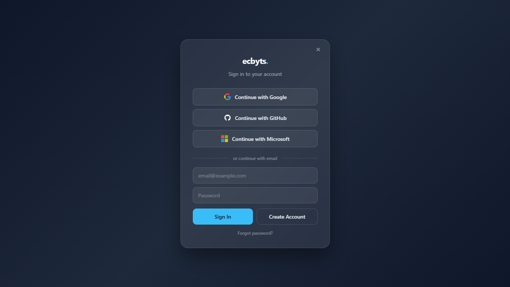
- SSO providers — Google, GitHub, and Microsoft (Azure AD) single sign-on.
- Email/password — Traditional registration with email verification.
- Login throttle — Rate-limited to 5 attempts per 10 minutes per IP. Exponential backoff with user-friendly countdown.
- MFA enrollment — Optional TOTP-based multi-factor authentication via the security settings panel.
- LGPD compliance — Consent management, data portability (JSON export of personal data), and right-to-deletion enforcement.
- Academic credential verification — Upload diplomas for EIS score credential multiplier (verified via Gemini Vision).
- Professional tier — Stripe checkout for premium features and higher usage quotas.
First Login
Click the auth button in the titlebar to open the SSO modal. Choose a provider or register with email. Authentication is optional — the platform works fully offline without an account.
Keyboard Shortcuts
| Shortcut | Action |
|---|---|
| Ctrl + Z | Undo |
| Ctrl + Y | Redo |
| Ctrl + S | Export Key (save) |
| Ctrl + E | Export JSON |
| Ctrl + I | Import Key |
| Delete | Remove selected element |
| Escape | Deselect / Close modal |
| F11 | Toggle fullscreen |
| G | Toggle grid |
| 1 – 8 | Switch toolbar group focus |
Environmental Glossary
| Term | Definition |
|---|---|
| CONAMA | Conselho Nacional do Meio Ambiente — Brazilian National Environment Council. Sets environmental standards and resolutions (e.g., CONAMA 420/2009 for soil quality). |
| CETESB | Companhia Ambiental do Estado de São Paulo — São Paulo state environmental agency. Publishes reference cleanup values for contaminated sites. |
| IBAMA | Instituto Brasileiro do Meio Ambiente — Federal environmental enforcement agency. |
| VR | Valor de Referência — Natural background concentration (CETESB DD-256/2016). |
| VP | Valor de Prevenção — Prevention threshold; monitoring required (CONAMA 420 Anexo II). |
| VI | Valor de Intervenção — Intervention threshold; remediation required (CONAMA 420 Anexo II). |
| CMA | Concentração Máxima Aceitável — Site-specific risk-based threshold from assessment campaigns. |
| Plume | A 3D volume of contaminated groundwater or soil, typically spreading from a source area following groundwater flow direction. |
| Monitoring Well | A vertical borehole drilled to collect groundwater samples and measure water table levels. |
| Observation | A single measurement: parameter (what) + value (how much) + timestamp (when) at a specific location. |
| Campaign | A field sampling event — a specific date when a team collected data from multiple monitoring points. |
| GAC | Gerenciamento de Áreas Contaminadas — Contaminated Areas Management. Brazilian regulatory framework for contaminated site investigation and remediation (CONAMA, CETESB). |
| EDD | Electronic Data Deliverable — Standard format for laboratory analytical results. |
| PDPL-U / PDPLU | The core ecbyts organizing model for elements, observations, and exports: Ponto, Data, Parametro, Leitura, Unidade. |
| ESH | Environment, Safety & Health — Domain for the SAO (Systematic Assessment of Operations) matrices. |
| IDW | Inverse Distance Weighting — Spatial interpolation method where nearby points have more influence. |
| Kriging | Geostatistical interpolation method providing best linear unbiased estimates with uncertainty quantification. |
| ECBT | The unified export/import format for ecbyts models. Encodes elements, campaigns, observations, and optionally blockchain integrity proofs. Replaces the legacy ECO1 prefix. |
| Merkle Tree | A binary hash tree structure where any modification to a leaf node changes the root hash, enabling efficient data integrity verification. |
| EIS | EnviroTech Integrity Score — A composite metric (0–5) evaluating the technical quality and trustworthiness of an environmental model. |
| Digital Twin | A virtual replica of a physical environmental site that evolves with real data over time. |
| BCF | BIM Collaboration Format — Standard for 3D-anchored issue tracking, adapted for environmental site issues. |
| BPMN | Business Process Model and Notation — Standard for workflow automation, adapted for environmental pipelines. |
| MCP | Model Context Protocol — Open standard for AI agent–tool communication. ecbyts exposes an MCP server for external AI integration. |
| Dynamic Dispatch | Registry-based action resolution where 442+ platform actions are discovered and executed by the AI assistant based on semantic intent matching. |
| Fine-Tuning | Process of specializing a pre-trained language model (Qwen2.5) on domain-specific environmental data for improved accuracy. |
| Symbology Profile | A visual mapping standard that controls element colors, icons, and 3D shapes for consistent site representation. |
| Veo 2 | Google’s AI video generation model used to create photorealistic environmental site fly-through videos from scene descriptions. |
| LGPD | Lei Geral de Proteção de Dados — Brazilian General Data Protection Law (equivalent to GDPR). |
| hCaptcha | Privacy-focused CAPTCHA service used for bot protection on authentication forms. |
| LoRA | Low-Rank Adaptation — Efficient fine-tuning technique that trains small adapter weights instead of modifying the full model. |
| TOTP | Time-based One-Time Password — Standard for multi-factor authentication (RFC 6238). |
Common Parameters
Environmental parameters available for observations. Custom parameters can also be added.
| Category | Parameters |
|---|---|
| Organic Compounds | Benzene, Toluene, Ethylbenzene, Xylenes (BTEX), TPH, PAHs, VOCs, SVOCs |
| Inorganics / Metals | Lead, Arsenic, Chromium, Mercury, Cadmium, Zinc, Copper, Nickel |
| Physical-Chemical | pH, Temperature, Dissolved Oxygen, Conductivity, ORP, Turbidity |
| Nutrients | Nitrate, Nitrite, Ammonia, Phosphate, Total Nitrogen, Total Phosphorus |
| Hydrogeological | Water Table Level, Hydraulic Conductivity, Porosity, Gradient |
| Microbiology | Total Coliforms, E. coli, Fecal Coliforms, Heterotrophic Plate Count |
| Safety & GHG | Incident rates, near-miss frequency, GHG emissions (CO2e), noise levels |
Custom Parameters
Need a parameter not in the default list? Add custom parameters via the configuration. Custom parameters support user-defined names, units, regulatory limits, and custom fields (sample depth, detection limit, fraction).
Technology Stack
| Layer | Technology | Purpose |
|---|---|---|
| 3D Rendering | Three.js 0.160.0 | WebGL scene, meshes, orthographic camera |
| Charts | Chart.js 4.4.1 | Scatter plots, histograms, time series |
| Language | Vanilla JavaScript | ES modules, no framework, no build step |
| Auth & Database | Supabase | SSO (Google, GitHub, Microsoft), PostgreSQL, 17 Edge Functions |
| AI / LLM | Multi-provider | 442 registered actions, 18 categories, 3-tier prompt, MCP server |
| ML | SimpleNN + Qwen2.5 | 6 solvers, fine-tuning pipeline, Transformers.js |
| Payments | Stripe + MercadoPago | 4-tier freemium, marketplace checkout |
| Cryptography | Web Crypto API | SHA-256, ECDSA P-256, AES-GCM, hCaptcha |
| Video | Google Veo 2 | AI-generated environmental site videos |
| Storage | IndexedDB + Supabase Storage | Model persistence, cloud files, key management |
| Typography | Inter, JetBrains Mono | Google Fonts |
| Server | serve (npx) | Zero-config static file server |
Platform Metrics
560+ source files • 222+ tests • 442 LLM actions • 17 Edge Functions • 6 ML solvers • 16 locales • 50 guided tours
No Build Step
ecbyts has no bundler, no transpiler, and no build process. ES modules are loaded directly by the browser, making the codebase easy to audit, fork, and contribute to.
Data Model (ECBT Schema)
Models are represented as validated JSON objects with the following top-level structure:
{
"ecbyts": "0.2.0",
"timestamp": "2026-02-07T12:00:00Z",
"project": {
"name": "Site Investigation",
"author": "Environmental Engineer",
"coordinateSystem": { "system": "UTM", "zone": 23, "hemisphere": "S" },
"areas": [{ "area": "Area A", "subarea": "Subarea 1" }]
},
"elements": [{ "family": "well", "id": "el_1", "name": "PM-01", ... }],
"campaigns": [{ "id": "camp_1", "name": "Q1 2026", "startDate": "2026-01-01" }],
"scenes": [{ "id": "scene_1", "name": "Overview", "viewStart": {}, "viewEnd": {} }],
"families": {},
"edges": [{ "id": "edge_1", "sourceId": "el_1", "targetId": "el_2", "type": "monitors" }],
"areasTree": []
}- elements — Array of site elements with family, position, properties, and nested observations.
- campaigns — Sampling events with dates, team info, and visibility toggles.
- scenes — Saved camera viewpoints with start/end states and per-element visibility.
- edges — Directed relationships between elements (monitors, flows_to, contains, etc.).
- families — Custom family definitions extending the default PDPL-U set.
- areasTree — Hierarchical project organization (controladora > area > subarea).
ECBT Blockchain Extensions
Blockchain-verified models add chain (hash provenance), merkle (content integrity root), author (key ID), and verification (ECDSA signature) fields. The schema version jumps to 3.0.0 for blockchain models.
Discoverable Panels — Painéis Descobríveis
Panels that ship with ecbyts but have no fixed toolbar home — reach them from the top ribbon More menu (menu Mais). This list is generated from the panel discovery registry, so it never drifts from the code. Painéis que existem no ecbyts mas não têm lugar fixo na barra — abra-os pelo menu Mais do ribbon superior.
Data — Dados
| Panel / Painel | How to open / Como abrir | Icon |
|---|---|---|
| Descobrir Modelos | Menu Mais → Descobrir Modelos | search |
| Catálogos do ECBT | Menu Mais → Catálogos do ECBT | book-open |
| Orçamento Cotado | Menu Mais → Orçamento Cotado | dollar-sign |
Monitoring — Monitoramento
| Panel / Painel | How to open / Como abrir | Icon |
|---|---|---|
| Treinamento | Menu Mais → Treinamento | book-open |
| Saúde Ocupacional | Menu Mais → Saúde Ocupacional | heart |
| Avaliação de Risco CETESB | Menu Mais → Avaliação de Risco CETESB | shield-alert |
Governance — Governança
| Panel / Painel | How to open / Como abrir | Icon |
|---|---|---|
| Timekeeper | Menu Mais → Timekeeper | clock |
| ECBT Score (Veredito da Área) | Menu Mais → ECBT Score (Veredito da Área) | dollar-sign |
ecbyts v0.3.0 — Environmental Digital Twin Platform
Distributed under AGPL-3.0-only — see repository LICENSE for authoritative terms — API Reference